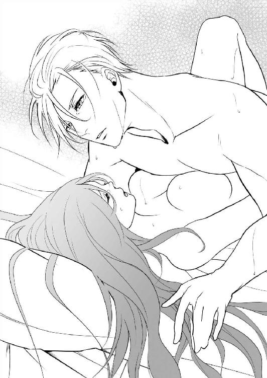
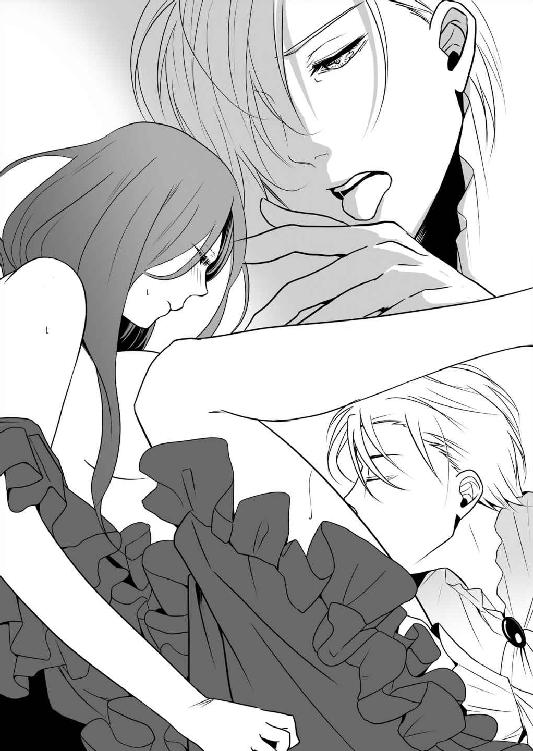
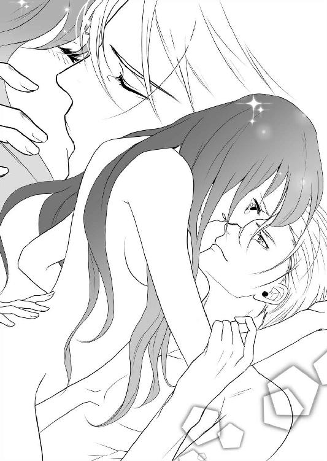

| 厳格なおじさまに求婚されて身も心も溺愛されるようになりました (LUNA文庫) | |
| 園内 かな | |
| 天海社／LUNA文庫 (2017) | |
厳格なおじさまに求婚されて身も心も溺愛されるようになりました
［著］園内かな
［イラスト］不破希海
１
「クローディア。この浪費は一体どういうことだ」
レナードは入室するなり、冷たい声をぶつけてきた。
仕立屋が持ってきたピンクローズ色のドレスを試着していたクローディアは、一瞬首をすくめた。
しかし、彼の嫌味と小言はいつものことだ。黙って聞いていると、ねちねち延々と説教され続けるはめになる。
仕立屋と着替えを手伝ってくれていたメイドは、勝手知ったる顔で部屋の隅に控えた。
ここはレナード・ケンドール侯爵家の屋敷の中の、クローディアの部屋だ。
クローディアは縁あってレナードに引き取られ、養育されている身である。だがそれでも、このまま彼の言う通りに過ごしていてはいけないという危機感があった。
クローディアは育ての親とも言えるレナードに向き合うと、負けずに口を開いた。
「あら、おじさま。浪費ではなく必要経費ですわ。来週のサルベーラ公爵さまの舞踏会にお呼ばれする為のドレスですもの」
「以前買ったドレスがあるだろう」
その返事に、クローディアは大きな溜め息を吐いてしまった。
「ええ、ほんの一年ほど前に買ったドレスが。散々アレンジして着回したけれど、もうあれで外出するのは限界ですわ。古着のクローディアって陰口を叩かれているんですもの」
レナードは別に貧しい訳ではない。
それどころか、貴族階級の中でも有数の富を保有している。だが、彼はクローディアが買い物をすることに厳しいのだ。
クローディアは彼がケチだから厳しいのだろうかと考えたが、普段の暮らしはとても良くしてもらっている。
ほとんど血の繋がらない、遠戚であるクローディアを引き取って世話をしてくれている恩は、いくら感謝してもしきれない程だ。
しかし、ドレスに関しては話が別だった。買ってもらえるドレスはねずみ色や枯草色など、地味すぎて悪目立ちする物ばかり。見た目も、良く言って時代遅れ、控えめに言ってもセンスが悪く垢抜けない物しか彼のお眼鏡にかなわない。
レナードはわざとクローディアにみっともない格好をさせ、恥ずかしい思いをするよう意地悪をしているのだろうか、と疑ってしまうほどだった。
そのレナード・ケンドール侯爵はぴしゃりと言った。
「浮ついて着飾り、ふしだらな格好をする必要はない。そんなドレスは許さない」
「全然、まったくふしだらではありませんわ。こんなに素敵なドレスなのに」
クローディアはくるりと回って流行のスタイルの、薄ピンクの華やかなドレスの裾を広げてみせた。レナードはいつもの渋面にさらに眉間のしわを追加して口を開いた。
「胸を露出しすぎだ。はしたないぞ、クローディア。仕立てるならせめて、詰襟の隠す物にしろ」
今は胸元が見えるよう、襟が丸く広がっているタイプのドレスが流行している。
しかし、流行がどうのと言うとまた話がややこしくなる。クローディアはわかりやすい反論に始終することにした。
「以前、言う通りにして詰襟の物を仕立てたわ。その時には胸を強調しすぎだとおっしゃって、結局どこにも着て行けなかったけれど」
クローディアは少々、同年代の娘より胸が大きいようだった。
レナードは渋面のまま、ぷいっとそっぽを向いて言った。
「男の気を引いて誘惑するには、まだ早い」
「そんなことはありません。おじさま、わたくしはもう十八ですのよ。早く結婚相手を見つけなければ、すぐに行き遅れになってますます縁遠くなってしまいます」
「年頃になれば、私が君に相応しい相手を見つける」
その言葉には、クローディアは大きな声を出してしまった。
「年頃って、今じゃなければ何歳ですの？ ただでさえ、両親もおらず将来が不安なのに！」
今度はレナードが溜め息を吐いた。
「クローディア、焦ることはない。それに、将来も君に苦労はさせないから」
「だって、おじさまが奥さまを迎えたら、わたくしは早く出て行かなければいけないでしょう......」
レナードは現在三十歳。
四年前に、両親を亡くしたクローディアを引き取って、それ以来面倒を見てくれている。
小言と嫌味が多いが、何不自由なく育ててくれてとても感謝している。
だが、彼は裕福な文字通りの独身貴族。
彼を射とめようとしている女性はたくさんいるのだ。
そして、そんな女性たちにしてみれば、クローディアは目の上のたんこぶのような存在だった。
舞踏会などでは、何かと当たりがキツい。そんな様子を見せられて、クローディアも早くこの家を出てどこかに嫁がなければと必死だった。
今度開催される、サルベーラ公爵主催の夜会は大規模で、独身の若者たちも多数参加する。
ここで良い人を見つけて、今後の身の振り方をどうにか展開したいと考えるのはごく当然のことと言えよう。
だが、レナードはその辺りの意識がまるで稀薄のようだ。
クローディアに向かって、きっぱりと言う。
「私が妻を迎えようが、君が出て行くことはない。クローディアは家族なのだから、面倒を見るのは当然だろう」
家族と言っても、クローディアの母方の祖母の姉の嫁ぎ先が当時のケンドール侯爵の弟だっただけだ。つまり、ほぼ他人だ。
レナードとクローディアに血の繋がりは、まったくない。
そんなクローディアを引き取って、面倒を見てくれているレナードは、たとえ義務で仕方なくとはいえ素晴らしい人なのだろう。
しかし、だからと言ってずっとここで甘えているとクローディアはオールドミスとなって、お小言を頂戴し続けながら生きていくことになるだろう。
クローディアは再度、主張した。
「わたくし、早く結婚してここを出たいんです」
「だから、その必要はないと言っている」
「その方が、お父さまもお母さまもきっと安心するわ......」
父母を持ち出すと、レナードは何も言えない。
彼も若くして二親を亡くしているから、肉親の話には弱いのだ。
それを知った上でこんな風に持っていくのは卑怯かもしれない。けれど、クローディアは話を止めなかった。
そうでもしないと、レナードはドレスを買ってくれない。そうなると夜会にも参加出来ない。結果的に、出会いの場もなく、新しく知り合う人もおらず、レナードに養われ厄介者扱いされ続けることになる。
そんなのは、嫌だ。
クローディアは希望を込めてじっと彼を見つめた。
果たして、レナードは渋々といった声を出した。
「サルベーラ公爵家に行っても良い。ただし、私と同伴だ。それに、ドレスはもう少し胸元を出さない物に変える」
「はい、おじさま」
条件付きとはいえ、勝ちをもぎ取った。
レナードの譲歩に、クローディアはにっこりと笑いかけた。
彼はますます渋い顔になったが、それでもクローディアはかまわなかった。
仕立屋に指示を出し、ドレスに対する注文をし始めた。
クローディアの髪色はよくあるブルネットだし、瞳の色もくすんだ緑色だ。ドレスだけでも華やかにしたい。
両親が健在であれば、こんなに必死にドレスを仕立てて舞踏会に参加しようとせずとも済んだのだろうか。
鏡を見ながら、考えてもしょうがないことをふと思い浮かべてしまう。
人生が大きく変わってしまったのは四年前、十四歳の春だった。
突然、事故でクローディアの両親は亡くなった。夫婦同伴で夜会に出席すると出掛けた先での馬車の事故だった。
クローディアの母方の祖母は子爵家の出身だったが、その家は貴族といえどそれほど裕福ではなかった。祖母は貴族ではない、実業家の祖父の元に嫁いだ。
その二人の間に生まれたクローディアの母も、実業家の父と結婚した。そうして、クローディアが誕生したのだ。
父が亡くなった時に財産を残しておいてくれたら良かったのだが、生憎、大きな投資をした直後だったらしい。遺された物は負債のみだった。
無一文どころか、借金のあるクローディアを引き取れば余計な負担がかかる。親戚たちはクローディアを押し付け合い、誰も引き取ろうとしなかった。
そこに現れ、負債を整理した上に屋敷に連れ帰ってくれたのがレナードだった。
最初、レナードを見た時にクローディアは天使が迎えに来てくれたのかと、我が目を疑った。
貴族らしい金色の髪に、怜悧なまでに整った顔立ち。瞳も冴え冴えとした青色で、その視線がクローディアをじっと見つめて言った。
『君の父上であるハロルド・スタンフィールドとは面識がある。それに、縁戚にも当たるようだ。君の財産管理をし、我が家で面倒を見ることに異存はないか』
難しいことを言われてよくわからなかったが、身寄りのないクローディアはこくりと頷いた。
親戚にたらいまわしにされて放り出されるよりは、きっと良い暮らしが出来るだろう。そう思ったのだ。
予想は当たったが、少し外れた。レナードは救いの天使ではあったが、人を厳しく審判する断罪の天使でもあった。
顔を見る度に毎度のようにお説教をされ、生活態度や言動にダメ出しをされ続ける日はなかなかに辛かった。
教育と食事はたっぷりと与えられたが、クローディアは愛情や親愛に飢えていた。
だから、誰かと結婚し、夫となる人と愛し愛され、笑みを交わしながら暮らしていきたいと願っている。
恐らくレナードは、身寄りも行くあてもない少女を憐み、慈善のつもりで引き取ったのだろう。しかし、子供を育てたこともなく、触れあい方もわからないレナードだ。
彼は己にも他人にもいつも厳しい。クローディアは、レナードがにこやかに笑っている所なんて見たこともなかった。常に眉間に皺を刻み、無表情で冷淡な様子だ。
だから、クローディアにも同じように、厳しく接して家族として育ててくれたのではないか。そんな風に思うのだ。
けれど、彼も愛情の対象となる奥さんを迎え、そして子供が出来たらその子には優しくしてあげてほしい。
そう願ってしまうクローディアだった。
クローディアが様々な準備をして過ごしているうちに、あっという間にサルベーラ公爵家の夜会当日となった。
当然、クローディアはレナードと同行することになるのだが、行きの馬車からお小言をたっぷりと頂戴した。
「クローディア。夜会では私から離れず、大人しくしているように」
「ええ、おじさま」
「盛大な夜会だけに、ハメをはずす輩もいる。決して一人で行動するな」
「ええ」
「私が席を外す場合は、イグニウス伯爵夫人に付き添いを頼んでおいた。彼女の言うことを聞くように」
「............はい、おじさま」
クローディアは内心、鼻白んだが何も言わなかった。
イグニウス伯爵夫人はレナードに秋波を送っては、それに気付かない彼の生真面目な応対にすら喜んでいるのだ。
クローディアとしては、そんな夫人と火遊びをするよりも、もっと優しくて可愛くてクローディアにも親切にしてくれる女性を妻にしてもらいたい。
内心の不満が滲み出てしまったのか、むっつり黙り込むクローディアにレナードが尋ねた。
「どうした、クローディア。何か問題でも？」
「......いいえ、何もありませんわ」
「だったらどうして、腹が立った時の顔をしているんだ」
いつも小言ばかりでうるさいレナードだが、クローディアの感情や表情はよく見ている。
クローディアは渋々、口を開いた。
「イグニウス伯爵夫人は、わたくしよりおじさまを追いかけるのに忙しいのではないかしら」
「私を？ そんなことはないと思うが。夫人は目を離さないと約束してくれたし、それはイグニウス伯爵の目の前でだ」
「口でだけなら何とでも言えますわ」
そう、クローディアが言われたことに頷きながらも、誰か良い人とお近づきになろうと企んでいるようにだ。
だがレナードはいつもの生真面目な表情で自信ありげに言う。
「大丈夫だ。それよりも今はクローディアの話だ。夫人が気に入らないからと言って、彼女から離れないように」
「..................」
何が彼女から離れないように、だ。
クローディアはレナードがわかってくれなかったことで、もやもやとした物が胸に湧き上がるのを感じた。
レナードはわかっていない。どうして己が狙われていることに気付かず、大丈夫などと言えるのだろう。
しかし、これ以上言っても平行線のまま議論にならないだろう。
クローディアは黙り込んだまま、レナードの続けられる小言を聞き流したのだった。
会場に着いてから、クローディアは忙しく立ち回った。
主催のサルベーラ公爵夫妻に挨拶し、クローディアはレナードと一曲踊る。そうしながらも、さりげなく周囲に目を走らせる。己を見ている者と目が合うとにっこりと愛想良くして見せるのだ。
それに気が付いたレナードは、いつもの渋面だ。
「クローディア、何をしている」
「いいえ、何も」
「嘘を吐け、リバスナー家の若造に色目を使っていただろう」
「色目なんて、使ったこともありませんわ。挨拶しただけです」
クローディアのそんな説明に、レナードはまるで納得しない。
踊っている最中だというのに、お説教が止まる気配はなかった。
「いいか、妙なことをするな。大人しくしていないと、夜会の途中でも引き上げる」
「妙なことって何かしら、おじさま」
「私の傍で大人しくしていないと連れて帰ると言っているんだ」
ぴしゃり、と言われてしまった。
通常通りといえばそうだが、それにしたっていつもよりレナードはイライラしているように見える。
（そんなに夜会に来るのが嫌なら、わたくし一人だけを行かせれば良かったのに）
そう思ったが、まさかそんなことを口に出来るわけはない。
言い返してしまえば、今以上に説教されることだろう。最悪、連れ帰られてしまう。
クローディアは話題を変えることにした。
「おじさま、イグニウス伯爵夫人がお待ちのようよ」
レナードがそちらに視線を向けると、夫人は艶やかに微笑んだ上にしなまで作ってみせた。
色目とはこういうことだろう。
それなのに、レナードはそれについては何も言わずに真顔で頷いた。
「では、夫人に挨拶をしに行こう」
「ええ......」
心にもやもやとした物はあるが、これ以上レナードとも話していたくない。
クローディアはダンスを切り上げ、レナードに連れられてイグニウス伯爵夫人の元に向かった。
夫人は後添えで、イグニウス伯爵に見初められた美貌はまだまだ健在だ。確か、レナードより少し若いか同じくらいの年齢だったはずだ。
二人が挨拶し、ご機嫌を伺いあっているのを聞きながら、クローディアはそんなことをつらつらと思い出していた。
時候の挨拶が終われば、レナードはすぐに本題に入る。
「それではイグニウス伯爵夫人、クローディアを頼む」
「いやだわ、ヴァイオレットとお呼びになって。わたくしも、レナードとお呼びしたいわ」
なるほど、このように男性との距離を詰めれば良いのか。
クローディアは一つ賢くなった。
きっと、夫人はいつもこのようにして火遊びを楽しんでいるのだろう。
ひょっとしたら、イグニウス伯爵の妻の座を射止めたのも、こんな風に迫って駆け引きをした成果なのかもしれない。
クローディアが夫人を見つめながらあれこれ考えていると、レナードのいつもの冷淡な声が聞こえた。
「いいえ、イグニウス伯爵夫人。呼び方はこのままで結構。それよりも、くれぐれもクローディアから目を離さず、この広間から離れないように頼みたい」
いつものようにくどくどと言うから、夫人も表情が少し引き攣ったようだ。
しかし彼女もさるもの、すぐに立て直す。
「レナードさま、サルベーラ公爵さまのシガールームに向かわれるのでしょう？ わたくしもご一緒させて頂きたいわ。ご挨拶したいんですもの」
そう言いながら、伯爵夫人はレナードに腕を絡め、その豊満な胸をむぎゅっと押しつけた。
クローディアは目を見開いてその光景を見つめてしまう。
見てはいけないのだと思うが、何だかいろいろ衝撃で目が離せない。
こんな風にレナードにくっつくなど、クローディアには考えられないことだった。
以前、引き取られた当初だったが、プレゼントをもらった嬉しさのあまり、父にするようにレナードに飛びついたことがあった。彼は見るからに嫌そうな顔をして距離を置いたので、クローディアは落ち込みながらも素直に離れたものだった。それ以来、レナードには触れないように気を付けている。
彼は、人と接触するのが嫌なのだろうと気遣ったのだ。
しかし、現在のレナードは伯爵夫人の手を取って、その甲に口付けまでさらりとしている。
そして夫人に囁いた。
「いいえ、同行は結構。貴女はここで、クローディアと一緒にいてほしい」
「少しくらいなら大丈夫でしょう？ クローディア」
夫人がそう言うので、クローディアは慌てて同調した。
「ええ、もちろん。わたくしはここにいます」
「ね？ クローディアもこう言っているのだし」
伯爵夫人はさらにレナードに身体を擦り付けようとしたが、彼は溜め息を吐いたものの制止はしない。好きにさせているようだ。
やがて、彼は了承したようだ。頷いて口を開く。
「それでは、サルベーラ公爵に話はまた後日と伝えてくる。クローディア、すぐ戻るからここで待っていろ」
「はい、おじさま」
「挨拶をしたらすぐにここに戻るからな。絶対に動くな。いいか、わかったな」
相変わらずくどくどとした物言いだ。
クローディアは殊勝な顔をしてみせて言った。
「ええ。もちろんよ、おじさま」
「では、行ってくる。ここから動くなよ」
もうわかったから。そう言いたくなるのを堪え、クローディアは笑顔で二人を見送った。
伯爵夫人が勝ち誇ったような顔をしてこちらを見たことが神経にさわる。
何がクローディアの世話を頼んだ、だ。やはりクローディアの予想通り、レナードに纏わりつく為に適当な返事をしただけではないか。
イライラともやもやが心に澱のように溜まり、まったく愉快な気分ではない。
うるさいお目付役がおらず、自由に動けるようになったというのにもかかわらずだ。
クローディアが立腹しながら果実水で喉を潤わしていると、新しいグラスがスッと差し出された。
「やあ、お嬢さん。良い飲みっぷりだ。これもどうぞ」
「いいえ、結構です。わたくし、お酒は嗜みませんの」
「はは、これはしっかりしたお嬢さんだ。私はマーカス。君の名前は？」
身だしなみと身なりはしっかりしているが、どうにも軽薄そうな雰囲気が漂っている。
クローディアは冷めた視線を送りながら口を開いた。
「ええ、存じ上げておりますわ。デミアノ伯爵さま」
「おや、私を知っていると？ そんなに有名人になっていたとは、光栄だな」
「未婚の女性は親しくすべきでない方だと伺いましたので」
このマーカスは放蕩者で有名なのだ。
女にだらしない遊び人で、女性を口説きまくって複数人と交際していると評判だ。
クローディアが求める人物は、彼ではない。
誠実で、堅実で、クローディアが捧げる愛を真摯に受け止めてくれる人物でないと、お断りだ。
結婚相手は誰でも良いという訳ではないのだ。クローディアはそんな気持ちで、きっぱり彼の戯れへの誘いを断った。
だが、マーカスは意外なことを言った。
「なるほど、さすがケンドール侯爵家の縁者だけはある。噂に違わぬ、しっかり者だ」
「あの、わたくしのことをご存知なのですか？」
不審に思ってマーカスを見上げると、彼はにっこりと笑って頷いた。
「もちろんだ、クローディア。君を知らない独身男はいないよ」
「......だったら、名前を尋ねなくともよろしいでしょう」
クローディアのぴしゃりとした物言いにも、マーカスは人懐っこく笑って気分を害した様子はない。
「知らない相手が急に名前を呼んだら、警戒するだろう？ こういうのは自然の流れで呼び合うものだ」
「それで、デミアノ伯爵さまはどうしてわたくしに？」
相手が邪気なくにこやかにしていると、冷たく当たるのも悪いような気がする。
クローディアは、つられて笑ってしまいそうになりながら事務的な口調で尋ねた。
マーカスはあっさり言った。
「実は、そろそろ結婚を考えている」
「さようでございますか」
「相手は年若く、有力な家柄と連なっているのがいい。さらに、美人でスタイルが良ければ言うことはない」
何だか都合の良いことばかり言っている。クローディアはげんなりしそうになりながら、礼儀正しく口を開いた。
「それでは、そのようなお相手が見つかることをお祈りしておきます」
「もう見つけた。クローディア、君だ」
「......えっ」
純粋な驚愕で、口をぽかんと開けてしまうクローディアに彼はにこりとして言った。
「君に結婚を申し込みたい。ケンドール侯爵に話す前に、先に直接伝えておきたかったんだ、クローディア」
「えっ、あの、でも、わたくしは、侯爵家と連なるとはいっても、血の繋がりは......」
慌てて否定しようとするクローディアに、マーカスは人差し指で彼女の唇をちょんっと突いて笑って言った。
「しーっ、その辺りの話は、あまり人が聞いていない場所でしようじゃないか」
「あ......ええ、そうですわね......」
ちらちらと周囲の人は視線を送ってくるし、耳ざとい人たちはひそひそと話をしている。
「結婚？ 今、結婚って言ったのかしら？」
「まさか、あのデミアノ伯爵が？」
さっきの話も聞こえていたのだ。
大変なことになってしまったのかもしれない。
クローディアは、まさかこんな話になるとは思わずどうしようかとまごついた。
すると、マーカスが腰を抱いてエスコートし始めた。
「さあクローディア、話をしに行こう。温室はどうかな？ 公爵ご自慢の花がたくさん置いてある。今日の為に明るく飾られているし、見に行っている人も多いがここほど賑やかではない。私たちの結婚の話をするには丁度良いだろう」
「でも、おじさまがすぐに戻ってくると......」
一応、クローディアはレナードを気にして言った。
あれほどくどくどと注意されたのだ。その言いつけを守らなかったら、さらにねちねちと説教されることだろう。
だが、マーカスは朗らかに言ってのけた。
「それならば、あとで私から口添えするよ。無理に連れ出した私が悪いのだから、クローディアを叱らないでくれとね」
そう言って茶目っ気ある笑みを浮かべている。
クローディアは、どうして彼が悪評高いのに女性にモテるのか、わかったような気がした。
彼はとても人好きがして朗らかで、雰囲気を華やかに楽しくさせるのだ。感じが良くて会話も楽しく、そして頼れる感じがする。
例えて言うなら、人懐っこく素直な犬のようなものだろう。
きっとレナードは猫だ、それも人に懐かず気難しいタイプの。
そんなことを考えながら、クローディアはマーカスにエスコートされて歩いていった。
レナードにはあとで、マーカスと一緒に理由を話せば良いだろう。
何しろ、初めて結婚を申し込まれたのだ。
話を受けないにしろ、どういうことかは詳しく聞いておきたい。
しばらく歩くとすぐに、公爵ご自慢とやらの温室に着いた。
そこには彼の言う通り、明々とした光に花たちが照らされていて、それを見ながら談笑している人たちがぽつぽつといた。
二人きりでないことに安心し、クローディアは彼を見上げた。
「それで、お話とは？」
マーカスは催促されて口を開いた。
「どうやら、君は美辞麗句よりも単刀直入な話を好むようだね」
「ええ。わたくしはケンドール侯爵家に連なるとはいえ、身を寄せているだけですもの」
貴族の令嬢ではなく、庶民階級であると遠回しに言ったがやはりマーカスは朗らかだった。
「歩きながら話そう。その方が、人に聞かれにくい」
「ええ」
「私は別に、聞かれてもかまわないんだが。どうせ真実になる話だ」
「......はい」
クローディアは反応に困ったが、マーカスは明るく話し始めた。
「結婚もせず、遊び人を気取っていたんだが、このままでは母と親戚に押し負けてしまう。彼らが手回ししたレールに乗せられ、結婚式場へと一直線だ」
「それは、おめでとうございます」
貴族にとっては、己の家を継ぐ子孫を持つことも大切な義務の一つなのだ。
マーカスは確か、三十を幾つか越えレナードより年上のはずだ。
レナードもそろそろ妻を迎えなければいけないが、マーカスの場合は親族が気を揉んで急がせている。まさに火急の案件となっているのだろう。
どちらかというと、彼の親族寄りの意見を持ってしまうクローディアだが、マーカスは大袈裟に首を横に振って見せた。
「まったくめでたくないね。相手は母が決めた、家柄だけの高慢ちきなお嬢さまだ。私は家庭内でヒステリーを起こされたくないんだ、絶対に」
「それでは、その方とは違う別の人と結婚したいと伝えればよろしいのでは」
「それだよ」
いつの間にか、温室の隅にある水路の前まで二人はやって来ていた。
そこでマーカスはクローディアと向き合い、両手を取って見つめながら言ったのだ。
「私は、君と結婚したい。どうか、私の花嫁となって欲しい」
「そんな、突然そうおっしゃっても......」
マーカスは大層な遊び人だと評判だ。
その彼が、結婚したからといって良き夫となってくれるかどうかは疑わしい。
それに、クローディアのことを侯爵家に連なる者とわかって狙いを付けてきたのだ。条件だけで選ばれて、お互いのことがまるでわかっていない。
それで結婚というのも、上手くいかないのではないだろうか。
クローディアはそんな風に思ったのだが、マーカスは安心させるように微笑んで手をぎゅっと握りしめる。
「もちろん、今から考えてくれたらいい。お互いが思いやりを持てばきっと上手くいくさ」
「そう、でしょうか......。ともかく、少し考えさせてください。おじさまにも相談しないと」
即断は出来ず、クローディアがそう言うとマーカスはにやり、とした。
「ああ、かまわないとも。だが、手付けの品は貰うがね」
「......？」
手付けとは何だろうと思っていると、マーカスが握っていた手を離した。そして、その手をクローディアの背中に回して抱き寄せた。
「私のことを考えるときは、この口付けを思い出してほしい」
「......！」
そう囁きながら、クローディアの顎を持ち上げ顔を寄せてくる。
クローディアは驚き、反射的に逃れようとするが彼の力は強い。それに、抱き寄せられた時に気付かぬうちに身動きを封じられていた。
「あっ、ま、待って......！」
「しーっ、口付けだけだよ」
背を逸らし、腰を引いてマーカスから離れようとするが彼は強引に口付けをしようとさらに抱き寄せる。
もう、ダメ......！
クローディアがぎゅっと目を瞑ると、背後から大きな声が聞こえた。
「クローディア！」
はっと目を開ける。
正面のマーカスが、舌打ちをせんばかりの顔でクローディアの後ろを見ていた。
その手が緩んだので、クローディアは彼から離れ振り返った。
振り返らずとも、誰が来たかは声でわかっている。
もちろん、レナードだ。
彼は息急き切った様子で、いつもはかっちりとセットされた髪も少し乱れている。
そしてずんずんと歩み寄って来ると、クローディアとマーカスの間に割り込んだ。クローディアを背に庇う形で、マーカスを睨み付ける。
マーカスは、いつもの様子を取り戻し朗らかに言った。
「やあ、レナード。久しぶりだね。君に今度、正式に話をしに行きたいんだが......」
「何の話にしてもお断りだ」
レナードは途中でマーカスの言葉を遮った上に、なんと、拳を振り上げた。
そしてそのまま、マーカスの頬にパンチを叩きこんだのだ。
「ぐっ！」
「......！ お、おじさま、何を......っ」
マーカスは避けられずに床に倒れ込む。
クローディアも驚きで動けなかった。
いつも理知的で、まず話をして何事も解決しようという、貴族的な考えの持ち主であるレナードだ。その彼が、暴力を振るうとは。
マーカスもあまりのことに驚いて床にへたりこんだままレナードを見上げている。だが、すぐに頬を押さえながら彼を睨みつけた。
「ずいぶん紳士的な行動じゃないか、レナード。学院で面倒を見てやった先輩に対してすべきことじゃないぞ」
「クローディアに手を出すな、この遊び人のクソ野郎」
レナードの汚い言葉も、初めて聞いた。
マーカスも同様だったようで、びっくりしながらもよろよろと起き上がる。そして、痛そうに顔をしかめながら口を開いた。
「ずいぶん気に入っているようじゃないか、その娘を。今までどんな女に言い寄られても、冷淡に振っていた男とは思えないな」
「クローディアは私が守るべき存在だ。お前に気安く口出しされる筋合いはない」
言い捨てると、レナードはクローディアに向かって命令した。
「帰るぞ。今すぐに」
「待てよ、まだ話は終わっていない」
マーカスがレナードの肩に手をかけようとする。
その手に向かって、レナードがさらに拳を振り上げた時だった。
「キャーッ！ 止めてっ！」
耳をつんざくような、甲高い悲鳴が背後から聞こえて、クローディアは驚いて振り返った。
イグニウス伯爵夫人だった。
レナードは小さく舌打ちして呟いた。
「ついて来るなと言ったのに」
「レナードさまっ、何をしているの！ あっ、貴方はマーカス......！」
夫人が大きな声で騒ぐので、今までひっそりとしていた温室内もざわついてきた。そして、皆がクローディアたちの姿が見える場所まで移動し、遠巻きに見ている。
ひそひそと囁かれて、クローディアは身の置き所がなかった。
心細く立ち尽くすクローディアの手を、レナードが引いて歩き出した。
「行くぞ。帰ろう」
「待て、私の話を聞け。クローディアも......」
マーカスが止めようとしたが、レナードは振り向きもせずにぴしゃりと言った。
「こちらから話すことは一切ない」
クローディアは引き摺られるように連れて行かれる。
伯爵夫人はまだ騒ぎ足りないようで、レナードが近付くと大きな声を出した。
「レナードさまっ、これは一体どういうことですの？ クローディアとマーカスに何かあったのですか？」
「貴女には関係ないことだ。二度と口出しするな」
レナードはまた切れ味鋭く、一刀両断した。
どうやら、彼はこれ以上は夫人と慣れあうつもりはないようだ。
そのことがクローディアにも伝わって、少し胸がスッとした。
それなら、最初からそうしておいてくれれば良かったのに、という気持ちも湧き上がるがこれで良しとする。
一方のイグニウス伯爵夫人は心底驚いたようだった。
「えっ......レナードさま？ あっ、お待ちになって！」
夫人がまた何やら呼びかけているが、レナードは無視して温室を出て行く。
そしてそれ以降、彼は無言だった。
それは、二人が屋敷に向かう馬車に乗っても続いた。
あの、いつも小言でうるさいレナードが一言も何も言わないのだ。
クローディアは恐る恐る声をかけた。
「えっと、おじさま......？」
「説教は、屋敷に帰ってからだ。今、私は、必死に怒鳴るのを堪えている」
歯ぎしりせんばかりの声で、レナードはこちらを向きさえしない。正面を向いたまま、厳しい表情を隠そうともしない。よほど、腹に据えかねているのだろう。
確かに、軽はずみにもマーカスについて行ってしまったことは反省すべきなのかもしれない。
けれど、むくむくとクローディアに反抗心が湧きあがってきた。
イグニウス伯爵夫人の香水が、レナードの身体からキツく匂っていることに気付いたからだ。
こんなに移り香が感じられるほど密着していたなんて、一体何をしていたのやら。
大体、最初からクローディアはあの夫人には良い感情を抱いていなかったのだ。それなのに、レナードが世話人として強行指名した。案の定、夫人はレナードに纏わりついていただけではないか。
それを、まんざらでもない感じで特に抵抗もしていなかったのに、今さらクローディアだけを怒るだなんて。
クローディアは、己の浅はかな行動は棚上げしてレナードへの不満を募らせていった。馬車の中に漂う香水の移り香が、それに拍車をかけた。
二人の間には緊迫した空気が張り詰め、今にも爆発しそうな危うさをはらんだまま屋敷に到着したのだった。
馬車が停止すると扉が開かれ、侯爵家の使用人が恭しく礼をする。
それらにろくに応えず、レナードは自室にクローディアを引っ張り込んだ。
エスコートとは程遠い、引き摺って歩くという乱暴なやり方だ。
部屋に入ったあとに扉をバタン、と乱暴に閉めるのもいつもとは違った。
向かい合って立ったまま、座るように勧めもせずに睨み付ける。
そんな風に威圧してから、ようやくレナードが口火を切った。
「一体、どういうことだクローディア。なぜあんな、マーカスみたいな男と一緒にいたんだ」
「結婚を申し込まれたからですわ、おじさま」
クローディアはわざと、にこやかに言ってのけた。
果たして、レナードは大きな声を出して怒り始めた。
「結婚！ あの男が？ まさか。だとしたら、賭博で莫大な借金でも背負っているんだろう。君の背後にある、我が侯爵家の財産を目当てにしているに違いない」
あっさりと金目当てだと断言され、クローディアはムッとした。
すぐにそれならば、と言い返す。
「では、わたくしからは侯爵家の財産を引き出せない旨を伝えましょう。それからもう一度話をしてみるのはどうかしら？」
「止めろ！ 君はあんな男が良いのか。あいつは僕より年上なんだぞ！」
怒鳴られて、クローディアも腹立たしい思いを抑えきれない。険のある口調で言い返す。
「年齢なんて関係ないでしょう。彼はわたくしの話を聞いて、ちゃんと会話をしてくれたわ。おじさまなんて、わたくしの話を全然聞いてくれないじゃないの」
「だったら、手を出されても良いっていうのか」
彼の声は低く、その言葉には煮えたぎるような熱い怒りが含まれていたが、クローディアはそれには気付かず言い返してしまった。
「手を出されるのは、おじさまの方でしょう。イグニウス伯爵夫人にべたべたされているのを止めもせず、まんざらでもない様子だったじゃないの。夫人と仲良くなさるなら、わたくしなんて邪魔......っ、きゃっ」
クローディアの反抗的な台詞は、最後まで口に出すことが出来なかった。
言葉の途中で、手を引っ張られ、ベッドに仰向けに投げ出されたからだ。
クローディアは茫然として天井を見上げた。
今まで、レナードに暴力を振るわれたことはない。腕を引っ張られるようなこともなかった。
それなのに、ベッドに投げ出されるなんて。
一体どうしてそんなに彼は怒っているのだろう。
彼を怒らせたという自覚のないクローディアは、上体を起こして彼を見上げた。
レナードは、爛々と瞳を光らせてクローディアに覆いかぶさってきた。
そして激情を堪えた声で言う。
「今まで、ずいぶんと我慢をしてきた」
「......え？」
「だが、君がそのような考えなら......もういいだろう」
なんだか、レナードは一人で話をして一人で納得しているようだ。
クローディアには何のことか、よくわからない。
「あの、おじさま？ 一体何を......」
「クローディア。君は今日、マーカスに何をされるところかわかっていたんだな？」
レナードはクローディアの質問を遮り、確認するように言う。
仕方なく、クローディアは口ごもりながら肯定した。
「それは、わかるけれど、でも......」
マーカスはあの時、口付けをしようとしていた。
けれど、クローディアは避けようとしていたし、実際は触れていないのだ。
そう言おうとしたのだが、レナードは続きを聞かずきっぱりと言った。
「わかっているならいい。もう我慢はしない」
そう宣言すると、レナードはあっという間にクローディアの唇を塞いでしまった。
「っ！」
これが、口付け。
クローディアは急激に胸がドキドキとしてきた。
初めてのキスは、心地良かった。
レナードの唇は薄く、いつもはお小言しか吐き出さない。けれど、こうやって触れあうと熱い快感をもたらした。彼の薄い唇は冷たいかと思っていたが、温かい。軽く何度か口付けられたあとに、ぺろりと舐められた。
「ん......」
クローディアの唇を、彼の唇が愛撫していく。柔らかく吸われ、唇を彼の唇で挟まれる。それから舌で舐めてなぞられると嘆息してしまった。
「んん......っ」
クローディアは、唇を触れあわせて気持ち良くなるとなぜか下腹部が引き攣るような感覚にもなると初めて知った。
マーカスに口付けられそうになった時は、どうしても拒否感があって身体が強張り、手を突っ張って阻止しようとした。
しかし今、レナードにされていることはまったく嫌ではない。
ぼんやりとされるがままに口付けを受けていたが、クローディアの意識をハッと引き戻す物があった。
それは、香りだ。
レナードの身体からは、イグニウス伯爵夫人の移り香がぷんぷんと漂っているのだ。
途端に嫌悪感が身体を支配した。
クローディアは顔を振って両手を突っ張り、キスを止めさせた。
「もう止めてっ！」
「まさか。まだ始まってもいない」
「っ、今、したじゃないのっ」
キスをしていたくせに何を言うのだと、クローディアは睨み付けた。
だがレナードは鼻で笑ってみせた。
「本当のキスを、教えてやろう。クローディア」
そう言うと、レナードは再び口付けを始める。
しかし、先ほどの優しく唇を愛撫するキスとはまるで違った。
唇をこじ開けるようにし、彼の舌が侵入してくる。そして激しくクローディアの咥内をかき混ぜ始めた。
まるで、奪われ食べられているようだ。
いつも上品でがつがつした所のないレナードが、このような激しい行動をするのが信じられない。
それに、こんなキスをされると身体がじんとして力が抜けてしまう。
彼は本気の口付けをする時は、いつもこうなのだろうか。
そう考えた時、クローディアはまたハッと正気を取り戻した。頭の中に、勝ち誇ったような表情をしたイグニウス伯爵夫人がよぎったからだ。
「んっ、んぅ......っ、んー！」
唇を離そうと首を振るが、レナードはびくともしない。
クローディアの舌を吸い、舌先でくすぐって濃厚なキスを繰り返す。
ようやく、満足したようなレナードがキスを止めた時には、クローディアの呼吸は荒くなっていた。胸がドキドキして、なぜか涙が滲んでくる。
クローディアは息を荒げながら言った。
「っ、はぁ......っ、止めてっ、おじさま......！」
「そんなに潤んだ瞳で睨んでも、男を煽るだけだ」
「煽る......？ そんな、どうしてこんなことするのっ」
癇癪を起こしたように、言うことを聞いてくれないレナードに向かって怒鳴る。
しかし、彼は怯みもしない。目を光らせて、ますます厳しい表情をクローディアに向けた。
「君はわかっていない。今夜、マーカスに唇一つ許せばこうなっていたことを」
「え......？ 何のこと？」
マーカスの話なんかより、今彼がしたことの方が重大なのではないか。クローディアはそう思ったが、彼は思いもよらないことをきっぱり断言した。
「あいつなら、あの場で君の処女を奪うことも簡単なんだ」
「......っ、まさか......」
とんでもないことを言われて、クローディアは言葉を失った。
本当に、そんなことがありうるのだろうか。さっき、レナードが駆けつけてくれなかったら、乙女の証をあの場所で失っていたのだろうか。
まさかという気持ちで先ほどのことを反芻していると、レナードが再び口付けようと顔を近付けてきた。
クローディアは顔を逸らして抵抗する。
「いやっ、止めて！」
「あいつとは良いのに、僕とは嫌だっていうのか。僕の何が駄目だって言うんだ......！」
激情を堪えるように声を絞り出すレナード。
対するクローディアは感情を溢れさせ大きな声を出した。
「移り香よ！ イグニウス伯爵夫人の香りをさせて近付かないで！」
レナードはその答えに驚いたようで、目を見開いてクローディアを見つめた。
「香り？」
「そうよ。こんなにぷんぷん匂いをさせるほど近付くだなんて、夫人ともこんなことをしていたの？ そんな手で、わたくしに触らないで！」
言っているうちに、なぜか涙が溢れてきた。
どうしてかわからないが、とても苦しくて嫌で、こんな話もしたくない。
すると、圧し掛かっていたレナードが身体を起こした。彼はベッドに腰掛けると同時に、クローディアの身も抱き起こした。そしてなんと、レナードの膝の上に乗せて抱きしめてくれたのだ。
髪をそっと撫でて、彼が慰めてくれているのだとわかった。
こうやって、人に甘えてもたれかかるなんて何年ぶりのことだろう。
本当に良いのかと迷いながらも、クローディアはレナードにおずおずと抱きついた。
しばらくそうして、落ち着いて涙が止まってから口を開く。
「おじさま、どうして......急に、こんなことをなさるの？」
レナードの豹変ぶりがわからず、クローディアはそう問いかけた。
彼は先ほどの興奮が落ち着いたようで、静かに答えてくれた。
「以前から、こうやって君を可愛がりたいと思っていた。だが、親族としてだけではない、それ以上の愛情に繋がるだろうと自重していたんだ」
「......え？ えっと、よくわからないわ、おじさま......」
レナードの言葉の意味が捉えられず、訊ね返す。
すると、レナードがじっと顔を見つめながら言った。
「おじさまと呼ばれたくはない」
「え、ええ......、じゃあ、おにいさま？」
親戚に当たるからとおじさま呼ばわりしていたが、独身である彼には腹立たしいものだったかもしれない。
そう思って呼びかけたが、レナードは首を横に振った。
「違う。レナードと、名で呼んでほしい」
「おじ、いえ、そんな、名前で呼んで、よろしいのかしら......？」
遠戚とはいえ、レナードは侯爵家の当主だ。身分の高い人物を呼び捨てにするなど、畏れ多い。しかし、彼は重ねて言った。
「レナードと」
「レナード、さま......」
「......まあ、良いだろう」
「............」
急な展開に戸惑うばかりのクローディアだが、レナードは優しく抱きしめて囁く。
「それから、イグニウス伯爵夫人には何もしていない。彼女が擦り寄るから、濃い香水の香りが移っただけだ」
「でも、嫌なの」
「......わかった」
レナードが膝の上からクローディアを下ろす。そして、ベッドから離れた。
「香りを落としてこよう。クローディア、君も入浴して眠るといい。話の続きは、明日にしよう」
「はい......」
「部屋まで送ろう」
何が何だか、まるでわからなかった。
しかし、クローディアは自室まで送り届けられた。今度は、優しくエスコートされ引き摺られるようなことはなかった。
自室に戻ったあとは侍女に浴室に送り込まれ、入浴後はベッドに押し込められた。
疲れと混乱で神経は昂っていた。横になってもなかなか眠れない。寝返りを何度もうち、頭に浮かぶことはレナードのことばかりだ。
明日、どうしようと心配にはなったが、最後に話したレナードは優しかった。きちんと話し合って、クローディアの意見も聞いてくれそうな様子だった。
冷静になって、己の主張をすれば大丈夫だろう。
マーカスとは何ともなかった。彼と結婚したい訳ではないが、クローディアは伴侶を探し求めているのだ。その過程でたまたま、騒ぎになって失敗してしまった。けれど、次からは気を付けてこんなことにはならないようにしよう。
大体、レナードがイグニウス伯爵夫人といちゃつくのが元凶だったのだ。
反省しながらも、つい恨み言を心の中で考えてしまう。
けれど明日、レナードに謝罪をすればきっと許してもらえるだろう。
そんな風に考えるクローディアは、まるで気が付いていなかったのだ。
レナードとの関係が変わりゆく第一歩を、すでに踏み出したことに。
２
やっとうとうととし始めたのが明け方で、眠れたと思ったらすぐに起こされてしまった。クローディアは、すっきりしない頭のまま、朝食の場にやって来た。
「おはよう、クローディア」
すでに席に着いていたレナードはいつもより機嫌が良く見えた。
そう、にこやかで楽しげに見えるのだ。
いつも不機嫌で冷たげなレナードが、微笑んでいる......？
クローディアはごしごしと目を擦って瞬いた。眠気のせいで、見間違えたのかと疑ったのだ。
「クローディア、目を強く擦るのは止めなさい」
そう言って眉をひそめたレナードは、いつもの彼のようだった。
クローディアはなぜかホッとしながら、言い訳を口にした。
「え、ええ。昨日、あまり眠れなかったの......」
「それは、僕のことを考えていたから？」
そう言ったレナードは、ニヤリと意地悪く笑みを浮かべた。
まったくもって、彼らしくない。
今まで、こんな風に笑うレナードを見たことはなかった。
茫然と彼を見つめ返したクローディアは、反射的に昨夜の寝室での出来事を思い出してしまった。
昨日、レナードに優しくキスをされたあと、大人の口付けを教えられたこと。
それによって身体が熱くなってしまって、部屋に帰ってから下着が濡れていたことに気付いたのは秘密だ。
キスのあと、口論になって泣いてしまって、レナードに膝の上に座って慰められたこと。
どれも、甘美な経験だった。
「っ......」
クローディアはサッと目を逸らして、無言で椅子に座った。
頬が熱い。何と言っていいのかわからないし、どう振る舞っていいのかもわからない。
黙ったままのクローディアに、レナードは笑いを含んだまま言う。
「クローディア。今、はっきりと宣言しておこう」
「何を、かしら？」
「僕は君を娶り、妻としよう」
「......！」
まさか保護者だったレナードに、そんな風に言われるなんて。
クローディアにとっては驚きでしかなかった。
目を見開き、茫然と視線を彼に向ける。
レナードは冗談を言うような人ではないが、そこに何か真意があるのではと表情を読み取ろうとしたのだ。
彼は皮肉げにふっと唇をつり上げた。
それはいつもの表情だ。
見守るクローディアに、レナードはあっさり言い放った。
「昨日の一件で、君はすでに傷物だ」
「えっ......」
「驚く方がどうかしている。わかるだろう、衆人環境でスキャンダルになったんだ。どうしてあんな、マーカスのような奴と一緒に逢い引きなんてしたんだ」
厳しく指摘され、クローディアは言葉を失った。
言い返せないからではない。
マーカスとの一件なんてすっかり忘れていたからだ。
昨日の夜、クローディアの頭の中はレナードとの触れあいですべてを塗り替えられてしまった。
思わず、唇を押さえてしまう。レナードとの口付けの感触を生々しく思い出したからだ。
レナードはそれを勘違いしたようで、眉間に皺を寄せ厳しい声を出す。
「あいつに唇を奪われたのか」
「いいえ......」
「だったらどうして唇を気にかける」
嘘は見逃さないとばかりに目を光らせるレナードに、クローディアはつい本音を零してしまった。
「そんなの、おじさまのせいじゃないの」
何てことを言ってしまったのだと、慌てて口を噤んで周囲を見回す。
一般階級出身のクローディアは、給仕をする使用人たちの存在を気にしてしまうのだ。
カップに紅茶を注いでくれた年配の給仕人は、素知らぬ顔で何も聞いていない風に装ってくれている。
それでも、聞かれてしまったのが恥ずかしくてクローディアは目を伏せた。
レナードは気にせず追い打ちをかけた。
「クローディア、おじさまは止めるよう昨日言っただろう」
「っ、え、ええ......」
「さあ、名を呼んで」
クローディアは羞恥で顔が熱くなった。だが、もうどうにでもなれとやけになって、彼の望むままに呼びかける。
「レナードさま......」
「まあ、今はそれでいいだろう」
「それで、レナードさまはわたくしが傷物になったから、求婚なさるの？」
ようやく本題に入ることが出来た。
クローディアのその質問に、レナードはぴしゃりと返した。
「言っておくが、君に拒否権はない。クローディア、君は僕の妻となりこれからも一緒に過ごすんだ。マーカスのような男には、絶対に渡さない」
「......それでは、おじさまは、レナードさまはどうなさるの？ わたくしは、夫となる人が愛人を囲っているなんて嫌だわ」
イグニウス伯爵夫人のことが頭に浮かび、クローディアはそんな風に言ってしまった。
察しの良いレナードは、すぐにクローディアが何を言いたいかわかったようだ。
「昨日から随分とこだわっているようだが、僕は伯爵夫人とは何もない。口付けの一つもしていないぞ」
「夫人がべたべたくっついても、満更でもない様子だったわ」
「それは違う。無理に引き離す方が面倒なことになるから、気がないと態度で表していたんだ」
レナードの否定の言葉も、実際に二人が密着していた様子を見ていたクローディアには簡単に納得できない。
「どうかしら。あんなに移り香が付くほど絡み合っていたんですものね。わたくしのことなんて放っておいて二人で行ってしまうし」
イグニウス伯爵夫人に拘り、何度も突っかかり文句を言い続けるクローディアを見て、レナードは楽しそうに笑って見せた。
「そんなに妬いていたとは知らなかったな。僕としては嬉しい限りだが」
「えっ......」
「妬いていたんだろう？」
その指摘に、クローディアはまたも驚いてしまった。
妬いていただなんて。そんなはずはない。
少なくとも、クローディアには嫉妬しているという自覚なんてなかった。
ただ、レナードと伯爵夫人がいちゃついているのを見ると、何だか腹が立ってイライラしただけだ。
けれど、それを面と向かって嫉妬だと指摘されると、気恥ずかしいやらばつが悪いやらで素直に認められない。
クローディアは動揺しながらも反論した。
「べ、別にっ、あれは焼きもちなんかじゃないし、わたくしがおじさまを好きだとかそんなんじゃないし......っ」
「おじさまじゃないだろう？」
「レナード、さま......」
レナードの指摘を素直に訂正すると、レナードはご機嫌な様子に戻っていた。
そしてにこやかに言う。
「では、クローディアがどんな気持ちで私と夫人を見ていたのか、詳しく教えてもらおうか」
「......っ......っ！」
己がとんでもなく恥ずかしい状況に追い込まれてしまっているように思える。
クローディアは顔が熱くなるだけでなく、瞳に涙まで滲んできてしまった。
きっと、頬は真っ赤になって目も潤んでいることだろう。体温が上昇して、手に汗まで滲んできた。
こんなの、嫌だ。
クローディアは動揺し、朝食も摂らずに立ち上がって駆けだした。
礼儀のことなんて、今はまったく念頭にない。
ダイニングを飛び出し、廊下をめちゃくちゃに走って屋敷の外に飛び出す。
広大で完璧に整備されている庭園を、何も考えずに走って奥まで突っ切る。そうして、大きな木の下でようやく足を止めた。
はあ、はあと荒い息を整えていると後ろから声がかけられた。
「クローディア」
レナードが追いかけてきたのだ。クローディアは振り向きもせず恨み言ともつかないことを口走った。
「な、何よっ、今さら......。おじさまなんて、わたくしがいるだけでいつも迷惑そうな顔をしていたわ」
背を向けたまま、昔の話を持ち出すクローディアに、彼はそっと背後から抱きしめて言った。
「それは、どうやって接すれば良いかわからなかったからだ」
「わたくしが近付いたら、離れるように言って嫌そうにしていたわ」
きっと、嫌われていないにしても面倒な娘を引き取ったと思っているのだろう、そう考えていた。
それなのに、今さら触れてきて求婚までするとは。彼がどういうつもりなのか、まるでわからない。
そんなクローディアに、レナードは落ち着いた声で宥めるように囁いた。
「僕には少女趣味などないと、そう思っていたからだ。けれど、君はいつも健気で可愛らしかった。つい、抱きしめそうになる程に」
「どうして、抱きしめてくれなかったの......？」
両親を亡くし、毎日不安で寂しかった。
レナードに甘えられたら、どれだけ安心出来ただろう。
すると、彼はクローディアを振り向かせて正面から抱きしめた。
「君の思っているような、親が子を無条件に甘やかすような愛を与えられないからだ」
「......え？」
レナードの言っていることがよくわからず、聞き返す。
彼はクローディアの頬に触れ、顔を覗き込みながら告白した。
「僕が君を抱きしめるのは、他の誰にも渡したくないと独占する為だ。一度この手に抱いたら、二度と手放したくはない」
「っ、レナード、さま......」
これが、彼の本音だったとは。クローディアには想像出来なかった心情だ。
けれど、それを聞いて喜びも感じてしまう。
レナードの瞳には、クローディアが知らなかった独占欲と情欲が燃え盛っていたのだ。
レナードの告白は続く。
「血が繋がっていないとはいえ、遠縁の少女に手を出すわけにはいかない。僕は己を律し、そして君に厳しく当たっていた。その方が、君の為になるだろうと、そう思っていたんだ」
「そう、だったの......？」
「ああ。早く君を誰か、安心して任せられる男に預けたいと思っていた。しかし、そんな男は存在しなかった。誰よりも、君を男から遠ざけたいと、そう考えてしまった」
それで、早く家を出たいというクローディアに反対しながらも厳しかったのかと、思い当たる。
クローディアはレナードを見上げながら言った。
「ひどいわ、おじさま。わたくし、辛く当たられて悲しかった」
「すまない。君に嫌味を言って、嫌われても良いと思っていた。しかし、実際に生意気な口をきかれると頭にきたものだ。君のお尻を叩きたくなる程度にはね」
「それは嫌だわ、おじさま......」
抗議しようとするクローディアの唇を、レナードの唇が塞いだ。
そして、重なった唇を吸われ、舌でくすぐられる。
「ん......っ」
大人のキスをされ、クローディアは立っていられない。レナードの胸にしがみつく。
彼の腕が腰に回され、身体を撫でられながら深いキスをされると、クローディアの下腹部は疼いた。
その瞬間、昨日と同様に下着が濡れてしまったのを自覚した。
慌てて、唇を離して彼を制止する。
「あ、だめ、おじさま......っ」
「君がおじさまという度に、立っていられなくなる程のキスをしよう」
「っ、レナード、さま......っ」
「そうだ」
唇に軽くちゅ、ちゅとついばむような口付けをしてから、レナードはキスを止めた。
そして、クローディアの顔をじっと見つめながら言う。
「これからは、もう我慢はしない。君を思うまま抱きしめ、甘やかそう」
「お......レナードさま、そんな......」
面と向かってそんな風に言われると、クローディアはどう反応して良いのかわからない。恥ずかしくて、視線を逸らそうとするが彼は頬に手を当て顔を覗き込む。
「そして、私の花嫁になってもらう。もう誤解はしていないとは思うが、私に愛人はいないし、イグニウス伯爵夫人とも何もない」
クローディアはそっと目を伏せ、こくりと頷いた。
すぐに再びレナードに口付けられる。
彼の舌が咥内に侵入してきて、そして舌を絡め合わせられるとクローディアは快感でぼうっとしてきた。
「んっ、ぅ......っ、ぁぁ......っ」
「はぁっ、可愛いクローディア。そんなに僕を煽らないでくれ」
ぼんやりとしながらも、クローディアは抗議した。
「いま、おじさまって言っていないのにどうして口付けたの......」
「それは、君が可愛すぎて僕の理性を奪ったからだ」
その言葉には甘い響きしか含まれていなかった。
まさか、いつも厳しいレナードがこんなことを言うなんて。
自分のことを可愛いと言ってくれるなんて。
クローディアは驚きよりも、嬉しさをより感じていた。
おずおずと確認する。
「ほ、本当に？ わたくしのこと、そう思うの......？」
「ああ。可愛いよ、クローディア。もっと君を甘やかして蕩かせたい」
レナードがクローディアの腰を抱き、屋敷の方に歩き始めた。
「今から挙式の準備をさせよう。期間は最短で済むように。婚約の発表はすぐにしておこう」
「そんなに、急がなくても......」
急激な変化に、クローディアは立ち止まろうとするが彼は歩みを止めない。
「君を逃したくない。もう、他の男といちゃつくのは絶対に見たくない」
「いちゃついてなんていないわ。それに、それを言うならレナードさまこそ......」
クローディアはまた水掛け論が始まるかと言葉を途中で止めた。すると、レナードがふっと笑って提案する。
「では、互いの無実を晴らしあおう」
どうやって？ そう思ったが、レナードは屋敷の中に入るなり家令に言い付けた。
「今から寝室に籠もる。誰が来ても今日は取り次ぐな」
「はい、畏まりました」
「それから、挙式の準備を進めてくれ。すぐにでも式を挙げたい」
家令は、誰と誰が結婚するのか、などという野暮な質問はしなかった。ただ恭しくお辞儀をして了承したのだった。
「さあ、クローディア。僕はあまりドレスに詳しくない。どうやって脱がせると良いか教えてくれ」
レナードの寝室に入るなり、そんな風に言われるとクローディアはたちまち恐ろしくなってきた。
もちろん、レナードのことは好きだし甘えたいとは思っている。
けれど、これが恋なのかどうかわからないし、誰にも触れられたことのない身体を晒すのも怖い。
「そんなの嫌だわ、おじさま......」
すぐにレナードが抱きしめて口付けを始めた。
唇を奪われ、舌で咥内をくすぐられるとたちまち身体が反応してしまう。
レナードとのキスに気を取られていると、彼の両手はクローディアの背を撫で、ドレスを弄り始めた。気が付くとふっと呼吸が楽になって、後ろの紐が解かれている。
「あっ、だめ、レナードさま......っ」
これ以上、キスをされては堪らないときちんと彼の名で呼ぶと、レナードは蕩けるような情熱を込めた瞳で見つめてくる。
「クローディア、誰かにドレスを脱がされたことはないんだね？」
「え......？ アンナにはいつも、脱がしてもらうけれど......」
アンナとは、クローディアの身の回りの世話をしてくれている侯爵家の使用人だ。
レナードはふっと笑って言った。
「そんな風に無垢な君を、初めて奪うのが僕で本当に嬉しい」
「レナード、さま......」
レナードがドレスを脱がしてしまい、次いでコルセットの紐を緩めていく。すぐにクローディアは下着姿にされてしまった。
恥ずかしくて、クローディアは両手で己を覆い隠す。
本当に、レナードは結婚のあとにするようなことを今してしまうのだろうか。
彼にどう応えれば良いのだろう。どうすれば良いんだろう。
ドキドキと胸の鼓動が頭の中にまで鳴り響いて、ぼうっとレナードを見上げる。
レナードの瞳には渇望のような物があって、クローディアを射ぬいていた。それに応じるように、クローディアの身体は内から熱くなってくる。
ふるりと、身震いするクローディアにレナードは宣言した。
「可愛いクローディア。今から君を、僕の物にする」
「あ、あの、わたくし、どうして良いか、わからなくて......」
しどろもどろになるクローディアに、レナードは笑みを浮かべる。嬉しそうな表情だ。
「僕に任せてくれ」
クローディアは、レナードのその表情に見惚れてしまった。
彼には常に厳しい視線を向けられていた。気に入られていないのだと、レナードが引き取ったことを後悔しているとさえ感じていた。
それが、こんなに喜んでくれている。
クローディアの心にも、喜びが満ち溢れた。
どうして良いかわからず、衝動的に彼に抱きつく。
レナードも、ぎゅうっと抱き返してくれた。
以前、レナードがプレゼントをくれた時に嬉しくて抱きついた時のことをつい思い出してしまう。その時の彼はよそよそしく身体を離し、冷たい態度だった。
「本当に、わたくしを、甘やかしてくれるの......？」
ついそんなことを尋ねてしまうクローディアに、レナードは抱きしめたまま応えた。
「もちろん。君が、もうたくさんだと言う程に」
そう言って、またキスを始める。
彼の舌に、クローディアも自ら絡めて口付けを深める。
キスをしながらレナードはクローディアをベッドに導く。そして昨夜とは違い、今度は優しくそっと寝かせた。
「昨日は、強引な振る舞いをしてすまなかった」
覆いかぶさられ、顔をじっと見つめられながらそんな風に言われる。
レナードがクローディアに謝罪したことなんて、一度もなかった。
彼は絶対的な立場の保護者であり、クローディアには指示や命令ばかりだったのだ。
そんなレナードが、ここまで変わるなんてクローディアには驚きしかない。
「おじさま......いえ、レナードさまがそんな風に言うなんて」
「こら。君にはまず、呼び方をしっかり覚えてもらおう」
「あっ、ごめんなさい、んっ......」
クローディアは先ほどのように口付けられると思って目を瞑ったが、彼の唇は胸にキスをしていた。
レナードはクローディアの下着をするりと脱がし、裸にしながら胸へのキスを続ける。
胸の先端を舐められ、吸われているとクローディアの下腹部は熱く潤ってしまうのを自覚した。
それを隠すように足をもじもじとさせているとレナードが囁いた。
「すごいな、こんなに濡れている」
ふと気付くと、レナードはクローディアの下着をじっと見つめていた。それは蜜が染みて、すでにたっぷりと濡れていた。クローディアは真っ赤になって大きな声を出した。
「いやっ、見ないで！」
「ふふ、僕は喜んでいるんだよ。君が感じてくれて嬉しい」
「だって、そんな......」
「それよりも、僕の名前をきちんと呼べるようになる練習をしようか」
レナードはそう言うと身を起こし、自らの服も脱ぎ捨てていく。
今まで、一部の隙もない恰好をしたレナードしか知らなかったクローディアは、ついその姿に見とれてしまった。
整った顔立ちは冷たいほどの美しさだが、レナードは肉体も均整がとれて素晴らしかった。
剣や乗馬で鍛えたのだろう、すらりとした細身のスタイルだが逞しい。
そして、彼が裸になると、クローディアが今まで見たことのなかった雄の証がへそまで反り返っているのが見えてしまった。
慌てて目を逸らしたが、ドキドキは止まらない。
それに、少し怖い。
そんなクローディアに、レナードは再び覆いかぶさって軽く口付けた。
「さあ、クローディア。僕の名を呼んで。もう、さまはなしだ」
「レナード......わたくし......」
「考えなくて良い。ただ、僕を感じてくれ」
レナードはクローディアの瞳をじっと見つめながら、手の甲にキスをした。
そんな挨拶のような口付けでも、今のクローディアには身を震わせるような快感になる。
ぼうっとしていると、レナードの唇が身体中を這いまわりだした。
腕や首筋に口付けられただけで、クローディアは喘ぎ背筋をしならせた。
「はぁっ、ぁ......」
「感じやすいんだな。それは知らなかった」
含み笑いのままに、胸の先端を咥えられる。クローディアは身体をびくりとさせてしまった。
「あんっ」
「君が胸を露出するドレスを着たのを見た時、その場で破り捨てたくなった」
「っ、そんな、どうして......」
「クローディアの胸を誰にも見せたくない。僕だけの物に出来た今、その気持ちはもっと強くなった」
「あっ、あぁ......っ」
胸の先端を唇で啄み、舌で転がされる。
さらに、もう一方の胸を手で愛撫されてクローディアは身を捩った。
しかし、レナードは胸への愛撫を止めない。
「あっ、おじさま、もう......っ、きゃうっ！」
クローディアがいつもの癖でおじさまと呼ぶと、レナードは胸の先端を甘噛みした。
その途端、クローディアの身体は雷に打たれたようにびくりと跳ねた。
「クローディア、僕の名をちゃんと呼んでくれ」
「っ、ごめんなさい、レナード......」
クローディアがそう言うと、レナードは舌先で胸の先端を舐め上げた。ゆっくりとした愛撫はもどかしいほどだ。
「そうだ。僕は君の叔父でもないし、親戚のおじさんのままでいるつもりはない」
「レナード、んっ......」
触れるか触れないかの優しいタッチで胸を弄られていると、クローディアの両足はまたもじもじと動き始めた。下腹部が疼いて、じっとしていられない。
それに気付いたレナードは、胸に触れていた手を下ろしてクローディアの内腿に触れた。
「昨日はここに触れられなかった」
「そこ、は......」
誰にも触れらたことのないクローディアの秘密の場所は、蜜で滴っていた。
レナードが蜜口に浅く触れると、くちゅりと水音がした。
まさか、漏らしてしまった訳ではないだろうが、それにしたって恥ずかしい。羞恥で思わず身を固くするクローディアに、レナードは囁いた。
「大丈夫、嫌がらないで」
レナードは濡れた指を蜜口から上に撫で上げ、クローディアの一番敏感な突起を弄り始めた。
「あんっ......！」
今までに感じたことのない、直接的な快感に身体が跳ねる。
彼はクローディアが動けないよう、覆いかぶさって足を割り開きながら、その突起を撫でまわした。
濡れた指でぬるぬると弄られると、クローディアの腰は勝手に動いてしまう。
「あっ、あっ......！ それ、いや、ぁ......っ」
「気持ち良いだろう？ 硬くなってきたぞ」
嫌なはずなのに、くりくりと撫でられると腰が浮いて、彼の指に押し付けるような姿勢になってしまう。
普段は隠された突起は、レナードの愛撫によって硬くしこって大きくなっていた。
「ふぁぁ、ぁっん......！ そこ、弄っちゃいやぁ......っ」
「どうして？」
「っ、だって、こんなの......っ」
クローディアの蜜はいまや太ももからシーツにまで垂れるほどだった。
それに、そこに触れられていると、身体の中に渦巻く何かが高まってどうして良いかわからない。いやいやと首を横に振るが、彼は止めてくれない。
そして指を動かしながら、クローディアを見つめて囁いた。
「僕の与える快楽だけを感じて、達するんだ」
「っ、それは、どうやって......？」
「拒まないで、受け入れてくれ」
レナードはゆるやかに愛撫していた突起の包皮を捲り上げ、中の真珠を剝き出しにした。クローディアには何をされたかわからないが、空気に触れるだけでも身体がひくつくような感覚がある。
「っ、はぁっ......」
期待で身体が震え、足がひくひくと動いてしまう。
息をひそめ、レナードの次の行動を待っていると彼は剝き出しの真珠に直接触れた。
「あっ、あぁーっ！」
ぬるつく指の腹で、くりくりと陰核を撫でられるとクローディアは嬌声を上げて身体をびくつかせる。
今までに感じたことのないほど、鋭い快感だった。
クローディアの反応に気を良くしたらしいレナードは、その痴態を見つめながら優しい声を出した。
「クローディア、僕の名を呼んで」
「れ、レナード、レナードぉ......っ」
クローディアに己の名を呼ばせている間も、彼はじっとその感じている様を眺めている。
「クローディア、そうだ。僕の名を呼びながら、感じて達してくれ」
「あっ、いや、いやぁ......っ」
レナードにこんな恥ずかしい姿をじっと見られている。そう思うといたたまれず、クローディアは首を横に振った。
すると、レナードはきゅっと陰核を摘み上げた。
「きゃうぅっ！」
「クローディア、どうして嫌がるんだ？」
「ひぁっ、ふぁぁっ......！」
クローディアの腰ががくがくと動く。もう限界は近かった。
こみ上げてくる快楽が、すぐにでも弾けそうなのだ。
「クローディア、達する顔を見せて」
「あっ、あぁーっ！ レナード、やっ、レナードぉ......っ、あーーーっ！」
レナードにじっと見つめられながら、クローディアは絶頂から飛び降りた。
信じられないほど甘美な体験だった。気持ち良さが続いて、身体がびくびく動いてしまう。それは意志の力では止められず、レナードの手はすでに愛撫を止めていたのに独りでに腰が動くほどだった。
やがて、クローディアの足がピンと伸びて硬直したあと、がくりと力が抜ける。
はあ、はあと荒い息を整え、興奮に染まっているクローディアを、レナードはじっと見守っていた。
クローディアが落ち着いたと見るや、彼は額にちゅ、と口付けてくれた。続けて熱い身体を抱きしめられる。
「可愛いよ、クローディア」
「レナード......」
抱きしめ返しても、レナードは嫌がる素振りを見せない。
それはやはり、クローディアにとっては嬉しくて仕方がないことだった。
視線が交わると、自然と唇が触れあってキスになる。
恥ずかしいけれど、レナードは揶揄するようなことは言わないし、何より彼が望んでくれる。
クローディアは、力を抜いて彼のキスを受け入れた。
「もっと、キスをしたい」
口付けの合間に、そんな風に囁かれると一も二もなくクローディアは頷いた。
「ええ......」
するとレナードは身体をずらし、クローディアの両膝裏を持って大きく足を広げてしまった。
秘所を彼の目前に曝け出すことになり、クローディアはレナードの頭を突っぱねて遠ざけようとする。
「やっ、そんなところ、見ないで......」
「ここに口付けたいんだ」
そう言うと、レナードはクローディアの襞の内側を舌で舐め上げた。最後に引っかかる突起をピンと跳ねるように舌で刺激されると、クローディアはたまらず声を上げた。
「きゃぅっ！ あっ、そんな......ぁっ」
「可愛いよ、クローディア」
レナードは突起をぱくりと口に含み、巧みな口付けを始めた。
舌先で転がしながら、唇で挟まれるとクローディアの身体は快感でびくつく。
「あっ、はぁっ、あぁ......っ」
「刺激が強いか？」
今度は舌の腹を突起にそっと宛がい、ゆっくりと柔らかな愛撫を施す。一転して物足りない弱い快感しか与えられなくなったクローディアは、無意識に腰を揺らしてねだってしまった。
「そんな、おじさま、こんなの......っ」
「呼び方。何度教えても覚えられない、悪い子だなクローディアは」
「ご、ごめんなさい、いつもの癖で......」
引き取られてからずっと、この呼び方だったのだ。急に変えようとしても、ついそう呼んでしまう。
しかし、レナードは意地の悪い笑いを含ませて言った。
「きちんと名を呼ぶように、躾けなければ」
直後、レナードの愛撫の仕方が変わった。
突起を強く吸いながら、舌先で弾くように擦り上げる。
「きゃんっ！ あっ、あーっ！ れ、レナード......っ」
包皮も舌で捲り上げられ、剝き出しの真珠を何度も舌先で叩かれる。たちまちクローディアの快感はまた上昇していった。
「あぁっ、レナード、また、きちゃう......っ、また、さっきの......っ、あぁっ！」
クローディアが絶頂を寸前で訴えた瞬間、レナードは敏感な真珠に軽く歯を立てた。
「ひゃぁっ！ あっ、あーっ！ イっちゃう、レナードぉ......っ、ああーっ！」
がくがくと身体を揺らしながら、レナードの思い通りにクローディアは達してしまった。
シーツの上にくったりと脱力した身体を横たえ、目を瞑る。
こんなことをされるなら、ちゃんと名前を呼ぶように気を付けなければ。
荒い息を整え、彼の名を口にしようとした時、再び秘所に口付けられたのを感じた。
「あっ、レナード、そんな......っ」
「まだ足りない。それに、君に痛い思いはさせたくない。たっぷりと感じさせておかなければ」
レナードは容赦なくクローディアの足を開き、敏感な突起に舌での愛撫を繰り返す。
達したばかりの身体で、快感をどう受け流せば良いかもわからない。クローディアはベッドの上でのたうって感じていた。
「あっ、あーっ！ ひぅっ、レナード、レナードぉ......っ」
「そうだ、きちんと僕の名を呼べるようになったな」
そう言いながら唇で突起を吸って苛める。
「あーーっ、あーっ！ あぁぁ......っ！」
何度も達して、クローディアは涎と蜜を零すばかりの存在となっていた。
そうさせているレナードは、満足そうに見下ろしている。
もう、どうにかして欲しい。
クローディアはその一心で彼の名を呼んだ。
「レナード、レナード......レナード......ぁぅっ」
「ふふ。こうすれば僕だけを見て、僕の名を呼んでくれるんだね」
「レナードぉ......っ、も、やめてぇ......っ」
「それなら、そろそろ解そうか」
そう言うと、彼はクローディアの蜜口につぷりと指を挿しこんだ。
「んっ......」
「痛いか？」
「いいえ、痛くはないわ......」
違和感に眉をひそめたが、濡れそぼっていたそこに痛みはない。
口淫を受けている時、クローディアは何をどうされているかよくわかっていなかったが、レナードは蜜口にも舌を挿しこんで愛撫していたのだ。
彼が指を動かす度に、ぐちゅぐちゅと淫らな水音がする。
それが恥ずかしくて身を捩ると、レナードが熱い息を吐いた。
「ああ、クローディア。すごい締め付けだ。指だけでこんなにキツいだなんて。君に痛みを与えないか心配だ」
「今は、痛くないけれど」
クローディアがそう答えると、レナードは頷いた。
「指を増やして、もう少し解そう」
指をもう一本挿入されると、違和感で眉根が寄る。けれど、出し挿れされるうちに感覚が鈍ってくるのだ。
「もう一本、挿れるよ」
「っ......」
さらに指が増やされると、痛みはなくとも圧迫感で息が詰まりそうになった。
耐えるようなクローディアを見て、レナードは指を動かしながら問いかける。
「君の良いところはどこだろう」
「え......？」
「この辺り、だと思うんだが、何か感じないか？」
中の指を、お腹側にくいっと押されたが、クローディアにはよくわからなかった。
「特には、何も......」
「そうか。初めてだし、仕方がないのか」
レナードはさらに指を動かし、中を探るように触れていく。
触れられているという感触はあるが、未通の中では快感は拾えない。クローディアがされるがままになって、静かにじっとしているとレナードは言った。
「やはり、中よりはここが感じるんだな」
そして、散々に弄られ硬くしこった突起をぺろりと舐めた。
「ぁんっ」
その直接的な刺激には、クローディアは弱い。腰を浮かせ、反射的にレナードの指を締め付けてしまった。
「逃げることはない。もっと感じてほしい」
「っ、だって、もう十分に......っ、あっ......！」
またレナードの執拗な唇での愛撫が始まった。今度は中の指を動かしながら、突起を舐めている。
すると、先ほどまでは触れられても何も感じなかった中がうねり始めた。
「っ、レナード、それ、いや......っ」
「ここか？」
「ひぁっ......！」
突起を愛撫されながら、その裏側に当たる部分を指で押されると何かが込み上げるような感覚がある。
それはきっと快感なのだろうが、クローディアの中はそれを気持ち良いと認識出来ない。
少しでも感覚を逃そうとして、身体をくねらせてしまう。
いつの間にか、レナードは敏感な突起への愛撫を唇から指に変えていた。じっとクローディアの反応を見つめながら、中を刺激している。
「気持ち良いんだろう？ クローディア」
「わ、わからな......っ、あっ、そんな、同時にされるのやぁ......っ」
突起をぬるつく指で摘まれ、擦られながら中の指も動かされる。
先ほどの口淫とは違った感覚が湧き起こって、クローディアは未知への恐怖を感じた。
「痛いか？」
「それは、違うけど......っ、あっ、あぁっ！ いやぁっ、漏れちゃう......っ」
妙な感覚は、尿意なのではないか。クローディアはそう気付いて、止めるよう懇願した。
「レナード、お願い。もう、止めないと......っ」
「かまわない。感じるままに振る舞ってくれ」
「だって、そんな......っ」
「漏らしてもかまわないよ」
あっさりとそんな許可を出し、レナードは愛撫を続ける。嫌がって腰を浮かせ身体を避けようとしたが、彼は容赦なく快楽を与え続けた。
「あっ、あーっ！ もっ、だめぇ......っ！」
何度目かわからない絶頂が近付いてくる。今までとは違い、中と外を同時に弄られているので快楽も桁違いだった。
「あーーっ！ レナード、きちゃうっ！ わたくし、あーっ！」
己の意思から身体が制御を離れ、がくがくと腰を震わせながら達する。それと同時に、レナードが動かす指に合わせてぴゅぴゅっと蜜口から液体が噴出されていく。
「あっ、いやぁっ、あぁ......っ、見ないでぇ......っ」
お漏らししてしまったことが恥ずかしくて、クローディアは泣きながら達してしまった。だが、レナードは心底嬉しそうな笑みを向けた。
そして、中の指を引き抜くとぺろりとそれを舐めたのだ。
愕然とし、涙を零すクローディアに、レナードは言う。
「クローディア、これは漏らした訳ではないよ。感じたから潮を吹いただけだ」
「そう、なの......？」
それにしたって、恥ずかしすぎる。
顔を手で覆い、見られないように隠そうとすると彼の手がそれを阻んだ。
「クローディア、顔を見せて。今から君と一つになるんだ」
「本当に......？」
普通なら、正式に結婚をしてからの行為を本当に今するのか。
クローディアはそう問いかけ、そしてレナードは頷いた。
「ああ。もうこれ以上の我慢は出来ない」
蜜口にレナードの雄が宛がわれ、それがめりめりと侵入してくる。
「っ......！」
「クローディア、息をするんだ。力を抜いて」
レナードが囁いて、クローディアの額や頬に優しく口付けていく。
彼の言う通りに、ふうっと息を吐いて力を抜こうとする。すると、レナードはぐっと腰を押し進めてくる。
「く、ぅ......っ」
「すまない、クローディア。あと少しだから、耐えてくれ」
クローディアはこくりと頷いてレナードを受け入れようとする。
レナードは押し進めては引いて、という動きを繰り返し、やがて官能的な溜め息を吐いた。
「はぁっ......クローディア。これで君は僕の物だ」
クローディアはその言葉を素直に受け入れた。
もう、この身はレナードの物なのだ。
レナードも快楽に浮かされているのだろうか。彼の瞳は熱っぽく、潤んだ様子が色気を感じさせる。
レナードの顔が近付いてきたので、クローディアは自然に瞳を閉じてキスを受けた。
圧迫感と少しの痛みがあった秘所が、口付けできゅんと潤った。
レナードは腰を動かさず、キスを続け、クローディアの身体を両手で優しく撫でていく。
首筋や肩、腕、胸と彼の手に触れられていくと、痛みだけではない感覚が溢れてくる。
「っ、はぁ......っ」
「動くぞ、クローディア」
レナードの腰がゆっくりと動き始めた。
彼はクローディアを気遣うように見つめ、様子をつぶさに観察している。
レナードの指が胸の先端を摘むと、クローディアの中は彼の雄をきゅっと締め付けた。
「あんっ......」
「大丈夫か？」
圧迫感はまだあって、多少は苦しいが痛くはない。
それより、また快楽が込み上げてくる。このままだと、また恥ずかしい姿を見せることになりそうだ。
クローディアは息を詰めて何も感じないようにしようとした。
「クローディア、痛みは？」
「え、ええ......、大丈夫よ」
「良かった」
レナードがほっとしたような表情を見せた。
それを目にしただけで、クローディアの胸はきゅんとなって下腹部も引き攣る。
彼がこの身を心配してくれているのが嬉しい。
痛いから止めて欲しいと言っても良いのだが、そうすればレナードのこんな顔も見られない。
クローディアは、レナードに甘えるように抱きついた。
彼は、しっかりと抱き返して口付けてくれる。
舌を絡ませながら中を擦られていると、上と下を同時に満たされているようだ。クローディアの官能はますます高まっていく。
レナードはクローディアの中の良いところを狙って擦り上げた。
「あっ、あぁっ......！」
「ここだな」
先ほどまでは存在も知らなかった、触れられると気持ちが良くなる見えない場所。そこをレナードの雄が行ったり来たりして刺激していく。
ぐっと押し込まれて、割り開かれるのも快感だが、レナード自身が引き抜かれていく感触も気持ち良い。
「ふぁっ、あっ、んっ！」
「はぁっ......すごいな、クローディア」
「あっ、あっ！」
レナードの動きが小刻みに強い物へと変わっていく。
クローディアが何も感じないようにしようとするのは、もはや無理だった。
レナードが動く度に快楽が高まっていく。
「ひぁっ、あーっ！ も、いやぁっ、また......！」
「クローディア、僕の名を呼んで。そして、感じてくれ」
「あっ、あーっ！ レナード、気持ち良い......っ」
素直に彼の言うことを聞いてしまう。
こんなこと、恥ずかしいのに。
けれど、レナードが己を求めていると実感すると、彼の望みに応じたくなるのだ。
「あぁっ、レナード、レナード......っ、あーーーっ！」
「クローディア、クローディア......！」
クローディアが達すると、中が複雑な収縮を繰り返す。レナードの雄を搾り取ろうとするその動きに、彼は逆らわずに突き上げて最奥で放った。
二人の動きが止まり、はあはあという呼吸の音だけが部屋に響く。
やがて、レナードはずるりと中の雄を引き抜いた。
「ぁっ......」
その感触にも、快楽を感じてしまう。
レナードはどさりと横に身を倒し、そしてクローディアを抱きしめた。
「もう、僕の物だ。これからは、離さない」
「..................」
一体、どうしてこれほど彼は自分の物にしたがるのだろう。
クローディアはふと疑問に思った。
けれど、いちいち口に出すほどの疑問ではないと思いなおす。
レナードはクローディアを望んでくれているのだ。だから、それでいいはずだ。
それを確かめるように、クローディアはぎゅっと彼に抱きつく。
レナードはクローディアの願い通り、抱き返してくれたのだった。

３
翌日から、クローディアの立場は『レナードの婚約者』となった。
もうすぐレナードの妻となる、未来の侯爵夫人だ。
そのことも信じられないが、それよりもレナードの激変した態度の方がクローディアには驚きだった。
「クローディア」
彼はクローディアの姿を見ると、蕩けるような甘い声で名を呼ぶ。
「え、ええ。レナード、お茶はいかが？」
その視線にどぎまぎしながら、クローディアはアフタヌーンティに彼を誘った。
侯爵夫人としての勉強をしながら、そろそろ休憩しようかと考えていた午後のひと時だ。
レナードが頷き、さっそくお茶菓子と紅茶が給仕される。
ティーカップを口に運ぶクローディアを、熱のある視線で見つめながらレナードが話しかけてきた。
「クローディア、何か必要な物や欲しい物はないか？」
「まあ。ついこの間までは、ドレス一つ買うのにも反対していたのに」
思わずちくりと言ってしまったが、彼は悪びれずに言う。
「あの時は、他の男に見せる為のドレスだったからだ。今は、僕の隣にいてくれるんだろう？」
「それは、そうだけれど......」
にこりと微笑まれると、そわそわしてしまう。
今までの彼とは、本当に大違いだ。
「クローディア、どうしたんだ。そんなに落ち着かない様子で」
指摘されたので、思っていたことを口にする。
「だって、今までと違いすぎるんですもの。どうして、そんなに笑っているの」
「嬉しいことがあれば、僕だって笑うさ」
「それに、その僕って呼び方。今までは、私って言っていたのに」
今までのレナードは、眉間に皺を寄せた厳めしい顔でお説教ばかりだったのだ。
こんなに変わられると、やはり戸惑ってしまう。
レナードは肩をすくめて見せた。
「以前から、気を許した者にはこうだったよ。クローディアには厳しく接しようとしていたから、ああだったが」
「そう......」
「これからは、君は僕の妻だ。今の僕に慣れてくれ」
その言葉に、クローディアは姿勢を正した。
彼の本音を聞いてみようと、改まって質問する為だ。
「そのことだけれど。本当に、わたくしを妻としても良いの？」
「もちろんだ。どうしてそんなことを聞くんだ、クローディア」
レナードに問われて、クローディアは少し俯いた。
「だって、わたくしは身分や後ろ盾は何も持っていないもの。持参金もまったくないし......」
「そんなことは、気にしなくて良い。君が必要とする物は、すべて僕が用意しよう」
「レナード......」
彼の言葉に、胸がじんと熱くなる。顔を上げると、レナードは真摯な瞳でこちらを見つめていた。
「だから、身分や家のことは気にするな。それに、持参金なんて必要はない。資産なら僕が持っている」
「ええ、そうね......」
「そうだ、指輪を贈らなければいけないな。それに、ネックレスや、ブローチも。式に使うティアラは、この家に伝わる物があるがそれで良いか先に見せておこう」
レナードには有り余るほどの財産があるのだ。
彼はこうして、今さら悩んでも仕方のないクローディアの心配事をあっさりと安心させる答えをくれた。
優しい、良い人だ。
クローディアはこくりと頷いた。
彼となら、きっとやっていける。
レナードが望んでくれるなら、侯爵夫人としてもやっていけるだろう。
クローディアはそう確信し、彼を見つめ返したのだった。
クローディアとレナードの婚約は大々的に発表され、それは皆に受け入れられた。
元々、社交的とは言い難いレナードが受け入れて大切にしていた少女だ。そのつもりで面倒を見ていたのでは、と考えていた人もいたようだ。
婚約発表のあとは、夜会などに招かれる時は二人で一組とされたし、来客があった時にはクローディアも紹介され同席した。こんな風に妻として振る舞っていくのだと、クローディアは学んでいった。
そんなある日のことだった。
レナードがやけに慌ただしく書斎で動き回っている。
クローディアは、珍しいことだと思いながら声をかけた。
彼は常なら、落ち着いて用意周到に行動しているからだ。
「レナード、どうしたの。急な外出かしら？」
「いや、来客があるんだが......」
言葉尻を濁すのも、彼らしくない。
不思議に思ってレナードを見上げると、苦い表情をしていた。
「何か、困ったことでも起こったの？」
「そういう訳ではないが......いや、少し立て込んでいるんだ。君には部屋の中にいてほしい」
いつもはきっちりと整理されている書類や本が、少々乱れて置かれている。探し物をするのに人がいては邪魔だろうと、クローディアは素直に頷いた。
「ええ、わかったわ。来客に備えて、身支度しておくわ」
「......今回は、同席しなくていい」
これは珍しいというか、初めてのことだった。
婚約が発表されて以降、クローディアは来客の度にレナードに引っ張り出され、挨拶をしたりお茶を振る舞ったりと、女主人としての采配を求められていたのだ。
普段とは違う雰囲気を感じ取ったが、そういうこともあるだろうとクローディアは了承した。
「ええ。じゃあ、部屋に戻るわ」
「..................」
書斎を出て、扉を閉める前にちらりとレナードを見る。
いつもなら、熱烈な視線を送ってくる彼が、今日は目を逸らし苦い表情のままだった。
「......？」
不思議に思ったが、やはりこんな日もあるだろうとそのまま自室へと足を運ぶ。
来客は数人の男性、裕福な実業家然とした人たちが来て何やら話し合っていたようだが、内容まではわからない。クローディアは一人、部屋の中で雑事をこなして過ごした。
やがて、話が終わったようで来客が帰る気配を感じた。
見送りくらいはした方がいいかもしれない。
屋敷の中にいるのに、顔も見せないのは普段の礼儀に照らしあわせると失礼に当たる。
クローディアはそう思い、皆が別れの挨拶を交わす玄関ホールへと降り立った。
クローディアの姿をまず認めたのはレナードだった。
彼はサッと顔色を変えて咎めるような声を出した。
「クローディア、部屋にいろと言っただろう」
「え、ええ......。お見送りくらいはしようと、思ったのだけれど......」
「クローディア！ では君が、ハロルドとポーラの娘なんだな！」
恰幅の良い、初老の紳士が大きな声を出してクローディアに近付いてきた。気さくに声をかけながら、クローディアの顔を覗き込む。
クローディアは知らない、初めて見る男性だった。
少々驚きながらも、クローディアは返事をしようと口を開く。
「ええ、初めまして。クローディア・スタンフィールドです......」
「紹介も話も、また後日と言ったはずだ」
ぴしゃり、とレナードが遮る。
つまり、レナードは彼らにクローディアを会わせたくなかったのだと、ようやく気付いた。
理由はわからないが、レナードがそうしようと思ったのなら、その方が良いのだろう。
恰幅の良い紳士は、レナードに詰め寄る。
「そうやって貴方が一人で囲い込むつもりか」
「フン......そう思うのは、己が心にその気があるからだろう」
「なんですと......」
「こちらにやましい思いは一切ない。すべては法に則り、正式な手続きをさせてもらう。さあ、客人がお帰りだ」
レナードの言葉に、家令が玄関の扉を開ける。
来客たちは何か言いたげにしていたし、クローディアに近付いた紳士は明らかに不満そうだった。
「まったく、なんてことだ」
初老の紳士はぶつぶつと呟きながら、何か言いたげにクローディアを見る。
そこに何か、浅ましい期待のような物を見てしまいクローディアは目を逸らした。
結局、見送りは止めてすぐに背を向け、自室に戻ったのだった。
「レナード、さっきのは一体、何だったの？」
皆が帰ったあと、部屋にやってきたレナードにクローディアは尋ねた。
当然の質問だと思うのだが、彼の返事は歯切れが悪い。
「......何でもない」
「そんなことはないでしょう。お父さまとお母さまのお知り合いなの？」
その問いには答えず、レナードはこんな風に言った。
「いずれは知らせるかもしれないが、今はまだ何も知らなくていい」
「そんな風に言われたら、気になるじゃないの」
「君は何も知らなくていいんだ、クローディア」
「......？」
一体、何だと言うのだろう。
彼が何か秘密にしていることがあるとわかって、気にかかる。
クローディアはなおも質問しようと口を開こうとしたが、次の瞬間、抱きしめられていた。
「クローディア、君は僕の物なんだ。もう、手放せやしない」
「どうしたの、レナード......」
まるで、クローディアがどこかに行くことを恐れているかのようなレナードの言動に、戸惑って尋ねる。
彼は答えず、クローディアに口付けを始めた。
ちゅ、ちゅと啄むような軽いキスのあと、深い口付けを始める。舌をくすぐられ、ねっとりと咥内をなぞられるとたちまちクローディアの身体は潤い始めた。
「んっ......あ、レナード、待って......っ」
彼の手が、クローディアの身体をなぞり始めた。
まだ、昼間の明るい光が部屋を照らしている。このまま、もっといろいろなことをされそうなレナードの手付きにクローディアは制止の声を上げた。
だが、レナードはその声をあっさり拒否した。
「待たない。今すぐ、君を抱きたい」
「そんな、まだ明るいじゃないの。それに、寝室でもないのに......」
そう口にしてから、それならベッドの上でなら良いと言っているようなものだと己の発言に恥ずかしくなる。
しかし、レナードはそれには触れずにふっと笑って口を開いた。
「ベッド以外でも、いろいろ出来ると教えてあげよう」
「え......？」
レナードはクローディアをソファに座らせると、その横に密着して腰を下ろした。
そしてクローディアを抱き寄せると、ドレスの襟ぐりを引き下げて胸を露出させた。
「あっ、いや......見ないで......」
クローディアの希望通り、流行の型である胸元が大きく開いたドレスを着ていたので、大きく引っ張られると胸が零れ出る。

「確かに、これは良いものだな。君の美しい胸が簡単に見えるし触れられる」
レナードはクローディアの胸を下からすくい上げるようにして持つと、柔らかく揉みしだき始めた。胸の先端を手の平で転がすように刺激され、クローディアは脚をもじもじと閉じあわせた。
「はぁ......っ、こんなの、こんな所で......」
「ここで触れあっても、気持ちが良いだろう？」
「そんな、ことは......っ」
「では、確かめてみよう」
そう言うと、レナードはスカートの中に指を侵入させてきた。
「っ、だめ......っ」
下着が濡れてしまっていることを自覚しているクローディアは、慌てて太ももを閉じあわせる。
しかし、レナードが耳元で囁き誘惑する。
「クローディア、足を開いて」
彼の指は胸の先端を摘んで弄りながら、ぺろりと耳を舐めている。
「っ、はぁ......っ」
快感で、クローディアの力が抜けていく。閉じていた腿も緩み、レナードの手はするりと奥まで進んでいった。
その指は内腿を撫で上げ、下着の上から秘所に触れる。
下着が濡れていることを、彼に知られてしまった。
クローディアがぎゅっと目を瞑ると、レナードは耳たぶをかぷりと噛んで言った。
「恥ずかしがっているクローディアも可愛いよ」
「っ、レナード......っ、あんっ」
濡れた布越しに、襞を下から撫で上げられる。
レナードの指は、興奮して大きくなった突起を簡単に見つけてしまった。
「ここ、触ると硬くなっているのがわかるね。まだろくに愛撫もしていないのに、感じてくれているのか？」
「ぁっ、ん......っ、レナードが、キスするから......」
「口付けだけで感じるのか？ 嬉しいな」
下着の布地を押し上げ、ぷっくりと膨らんでいる突起をレナードは弄り始めた。
そろそろと弱く撫でまわしたかと思うと、押し潰すように小刻みに揺らす。
「ああっ！ あーっ！」
レナードが突起を摘んで強めの刺激を与えると、クローディアは面白いように感じて喘いだ。腰をがくがくと揺らし、すぐにでも達しそうになっている。
それを見てとったのか、レナードは愛撫を弱めた。
触れるか触れないかの力で、指の腹で円を描いて撫でている。布越しにそんな風に撫でられてはもどかしく、クローディアの足は勝手に開いていく。
胸の先端を弄る手も、同じように優しい触れ方しかしない。
「はぁっ、はっ......」
物足りない快感に、クローディアは身悶える。
無意識のうちに腰を揺らしていると、彼の意地悪な指は突然力を込めて突起を押して、こりこりと上下に擦り始めた。
「きゃぅっ！ あっ、あっ......！」
「下着の上から触れているだけなのに、僕の指がびっしょり濡れてしまったよ」
「いやぁ......っ」
意地悪なことを言われて、クローディアは顔を背ける。
すると、レナードはクローディアの下着を掴み、膝までずり降ろしてしまった。
「あっ、レナード......」
「濡れたまま穿いていると、気持ち悪いだろう？」
そう言ってソファから降りると、レナードはクローディアの足元に跪いた。
そして、下着を足から完全に引き抜いてしまった。
「っ、でも、あっ、待ってレナード......！」
レナードがスカートを捲り上げてしまった。慌てて足を閉じようとするが、膝裏を持って大きく開かされてしまう。
秘所が彼の眼前に曝け出されてしまった。
しかも、レナードがじっと見つめているのも己の視界に入っている。
「いやぁ......」
恥ずかしさで、クローディアは顔を手で覆ってしまった。
だが、蜜口からはとろりと蜜が零れてしまう。彼に見つめられていることもまた、興奮するのだ。
「クローディア、顔を見せて」
「だって......」
「顔を見せないなら、ここだけをずっと触り続けるよ？」
そう言いながら、レナードは敏感な突起をぬるぬると指の腹で撫でまわす。布越しに触れられる先ほどとは違い、直接触られるとまた快感も増す。
「ひぁっ、ん......っ！ ああっ、いやぁ......っ」
ここを弄られると、直接的な快感で身体がびくびくと動いてしまう。
けれど、クローディアの蜜口の中、奥からは疼きのような物で快楽が燻っていた。
レナードの言うように、敏感な突起だけをずっと苛められると快感と物足りなさでおかしくなってしまうだろう。
クローディアは顔から手を離し、己の脚の間にいるレナードを見下ろした。
彼がこんな所に跪いて、恥ずかしい所を見ているだなんて信じられない。
クローディアの思いをよそに、レナードは言った。
「クローディア、見ていて」
そして彼はクローディアの襞を両手で割り開いた。いつもは秘められた襞の内側が、大きく曝け出されてしまった。
レナードはそのまま、舌を伸ばして見せつけるように襞の内側を下から上へと舐め上げた。
「あ、あ......っ、きゃぅっ！」
蜜口とその周辺に触れられてもそこまで感じないが、やはり突起を舌先で刺激されると感じてしまう。最後に、ピンと弾くように跳ね上げられると余計だ。
クローディアの反応に気を良くしたのか、何度も舌先で強めに舐め上げ弾かれる。
「やっ、やぁっ......！ 強い......っ」
「クローディアはこうする方がお気に入りだったかな」
レナードはそう言うと、今度は舌の腹を突起に当てて柔らかな愛撫を始めた。
「はぁっ、あぁ......」
気持ちが良くて、クローディアの腰がひくつく。
優しい愛撫に、蕩けそうだった。
けれど、このまま優しい愛撫だけが続く訳ではないと、クローディアはすでに知っていた。
レナードは柔らかな触れ方をしたあと、突然強く快感を与えてくるのだ。
そうやって緩急を付けてクローディアを絶頂に追いやるのが常だった。もう何度も彼に抱かれて快楽を与えられた身体は、それを覚えていた。
果たして、その瞬間はやって来た。
優しい舌使いをしていたレナードが、突然突起をぱくりと唇で挟んでしまった。
そして、強く吸いながら舌先で何度も扱き始めた。
「きゃぅっ！ あっ、あーっ！ イく......っ！」
がくがくと身体が震え、頂上へと向かっていく。
レナードもそれを望んでいたようで、彼は愛撫を止めなかった。
尖らせた舌先で、突起の表面を何度も上下させるうちに、普段は突起を守っている包皮も捲れあがってくる。
薄皮が剥かれ、隠されていた真珠が露出する。そこにも舌が這わされると、クローディアは背を仰け反らせて喘いだ。
「あああっ！ あーっ！」
腰をがくがくと揺らし、レナードの唇に秘所を押し付けるように動いてしまう。
嬌声を上げ、クローディアは絶頂から飛び降りた。頭と目の前が真っ白になって、快感だけに支配される。
がくりと力が抜け、目を瞑って息を整えていると衣擦れの音が聞こえた。
目を開けると、レナードが下衣をくつろげて彼の雄を露出していた。
「あぁ、レナード......」
すっかりレナードの身体によって仕込まれてしまったクローディアは、彼の雄を見ると下腹部が疼いてしまう。それが与える快感を、覚えてしまったからだ。
蜜口とその奥がひくついて、雄を待っている。
「挿れるよ」
レナードはクローディアの両膝をソファの背もたれに付けるほど大きく足を開かせた。
そして蜜口に自身を宛がい、ゆっくりと挿入してくる。
「あぁっ、あー......っ」
待ち構えていた物が与えられ、クローディアの中は喜んで蠢いている。
中の肉壁はレナードの雄に吸いつき、纏わりついていた。
「はぁっ......、クローディア、なんて身体だ。搾り取られそうだ」
「ひん......っ、そんなの、勝手に......あぁっ......！」
レナードは巧みな腰使いで、ゆっくりと突き挿れては引き抜く。それを繰り返されて、クローディアの腰もうねり始めた。
「クローディア、見るんだ。君が僕を美味しそうに咥えこんでいるよ」
「いやぁっ、そんな......っ」
それでもクローディアが下を見ると、結合部は生々しく濡れていた。
彼の言う通り、クローディアの雌の部分はすっかりレナードの雄に馴染み、挿入を容易く許している。
レナードが動く度に、太く熱い彼自身が出入りをしている。その淫靡な光景に、眩暈がしそうだった。
「ほら、ここがクローディアの良いところだ」
雄を半分ほど挿入したレナードが、敏感な突起の裏側辺りを太い部分でごりごりと擦る。
小刻みに動かれて、的確に感じる場所を苛められるとクローディアはたちまち上昇していった。
「あぁっ！ あーっ、もぉ......っ！」
「イくときはどうするんだった？」
「レナード、レナード......っ、イっちゃう......っ！」
達する時は、彼の名を呼ぶように教えられていた。
レナードは名を呼ばれると興奮したようで、動きが突如変わった。
中ほどまで挿入して、クローディアの良いところを執拗に擦っていたが、奥まで激しい腰使いで打ち付けだしたのだ。
「ひぁっ！ あっ、強い、よぉ......っ！」
ガツガツと突き上げられ、肉のぶつかる音とじゅぶじゅぶという水音が部屋に響く。
そうされると、クローディアが抱えていた下腹部の疼きが強い快楽へと変わっていくのだ。
彼は奥を突きながらも、途中の感じる部分を擦っていく。それに、突き上げられる度に敏感な突起が押し潰され、中と外の両方の快感が与えられる。
「も、だめ......っ！ レナード、あーーっ！」
疼き、ひくついていた中がレナードの雄によって頂上に押し上げられる。
達したクローディアは、己の意志では制御できない収縮によってレナード自身を奥まで取り込もうとする。
レナードはそれに逆らわず、最奥まで突き上げて押し付けるようにして欲望を放った。
クローディアは、そんな彼の背中にぎゅっと手を回してその欲望を受け止める。
今は、何も言わずに抱きしめあって口付けるのが正しいことのように思えた。
「早く、君が僕の物になってしまえばいいのに......」
ぽつりと呟いたレナードの声が耳に残る。
「レナード、一体それはどういう......？」
クローディアの問いかけに、レナードは黙ったままぎゅっと強く抱きしめて応じたのだった。
レナードは、何かを隠している。
それはクローディアの両親が関わる何かではないか。
そんな疑惑がクローディアの胸に根付いていたが、確証はなかった。
あれ以来、レナードには質問しても何も答えてもらえなかった。
さらに屋敷の中でも箝口令を敷いたようだ。クローディアが家令や使用人に、あの日の来客について尋ねても誰もが口を閉ざし教えてくれない。
閉塞感にじりじりしながらも、挙式の準備は進んでいく。
目隠しされながら道を歩かされているようでもどかしいが、クローディアにはどうしようもなかった。
４
そんな日が続く中、クローディアは遠戚である子爵家主催の夜会に参加することにした。
レナードは難色を示した。最近の彼はとみに、クローディアが出歩いたり外との繋がりを持とうとしたりすると反対するのだ。
普段はレナードの意見を聞き入れるクローディアだが、今回は首を横に振った。
「どうしても、行きたいの。わたくしのおばあ様の生家なんですもの。一度は行ってみたいし、むしろ行かなければ不思議に思われますわ。遠縁とはいえ、親戚は親戚だもの」
「......わかった。ただし、僕が同伴した上でだ。僕の傍から離れないならかまわない」
「ええ、もちろんよ」
クローディアは頷き、レナードが折れた形でその夜会に二人は参加した。
だが、その約束はあっさりと破られることになる。
レナードに声をかけてきた人物がいたからだ。
「ケンドール侯爵、内密にお話が」
「......今は夜会の最中だ。クローディア......婚約者も同伴しているし、また後日」
「それが至急の、今すぐ話さなければいけない案件なのです」
レナードに耳打ちしてきたのは、イグニウス伯爵だった。
何か、切迫した状況になったのかもしれない。
「わたくしは、ここにいるから行っていらしたら？」
レナードは舌打ちせんばかりの表情だったが、渋々頷いた。
「では、行ってくる。すぐに戻るが、以前のようなことになるのは許さない」
釘を刺すのも忘れない。
前にスキャンダルとなったマーカスとの一件を、レナードは決して忘れないし二度と起こさせないように厳しく言い含めているのだろう。
「わかったわ。ここにいて、動かないから」
クローディアは彼を安心させるように言って、メインルームから出て行く二人の背を見送った。
クローディアは部屋の隅に控え、目立たないようにじっとしていた。そんなクローディアに、悪意ある声が降ってきた。
「レナードの野郎、君を騙して財産を奪い取ろうとしているんだぜ」
壁の花として大人しく立っていたクローディアに近付き、前置きもなしで言い放った人こそレナードが許せない人物、マーカスだった。
どうやら、何かと因縁があるようだ。
クローディアはまさかそんなはずはない、と言い返そうしたが、同時に、心当たりがあるとハッとした。
先日の来客以来、少しよそよそしく何かを隠しているようなレナードの姿が疑惑となって脳裏に浮かぶ。
だが、マーカスの言うようにクローディアの財産を奪おうなど、レナードがそんなことをするだろうか。
『そう思うのは、己が心にその気があるからだろう』
レナードが父母の知り合いらしい実業家に向けた言葉を思い出す。
やはり、レナードに限ってお金目当てで悪いことをするはずがない。クローディアは少しでも疑ってしまった己を恥じた。
クローディアは毅然とマーカスに向き合い、しかしあえて柔和な笑みを浮かべて口を開いた。
「それは一体、どういうことかしら」
「ここじゃ話すのは不味い。場所を変えよう」
夜会の会場では、クローディアがマーカスと話しているのをちらちらと見ている人もいる。
マーカスはクローディアのスキャンダルの相手だ。二人の噂はまだ、人々の記憶に新しいのだろう。
ここで二人で姿を消すのは、その噂を再び燃え上がらせるようなものだ。
それに、ここから動かないとレナードと約束したのだ。
以前のように、レナードを出し抜いてでもどこかに行こうとするクローディアは、もういない。
クローディアはマーカスにきっぱりと言った。
「いいえ、ここで結構よ。貴方と二人で温室に行くのは、もう御免だわ」
「だったら、話せないな」
話を聞きたければついてこいと言外に要求するマーカスに、クローディアは彼への疑惑を深めた。
そこまでして二人きりになりたがるなんて、彼には良からぬ狙いがあるのではないか。
いつもはクローディアと共にいるレナードを連れ出したのがイグニウス伯爵というのも怪しい。
マーカスとイグニウス伯爵夫人は何か繋がりがあるのではないか。そんな直感もあった。
「では、話は以上ね。ごきげんよう」
あっさりとマーカスを切り捨て、彼の傍から離れようとクローディアは背を向けた。
「待て！ 話を聞かなければ後悔するぞ、絶対にだ」
「そうかしら？ わたくしは別に困らないわ」
クローディアが聞きたがる素振りを見せないと、マーカスは思った通りに焦って口走った。
「いいか、よく聞け。お前には、財産がある。死んだ両親が投資していた鉱山の開発権だ。その鉱山から、ダイヤモンドが発見されたらしい。今まで失敗だと思われていた事業が、実は大成功だったという訳だ」
「......！」
謎だったあの時の来客とレナードの会話が、一本の線として繋がった瞬間だった。
あの恰幅の良い紳士は、父の仕事上で繋がりのあった知り合いなのだろう。
他にいた人物たちは、弁護士や銀行家なのではないのだろうか。
皆が鉱山の開発権について、レナードと話し合っていたのだ。
そして、クローディアに近付こうとした人物はおそらく、その鉱山の開発権を欲しかったに違いない。
そういう人たちは、今までクローディアが両親を亡くし困っていた時には姿を見せもせず、財産があるとわかった時に親しげな口をきく。それで、レナードが怒って遠ざけようとしたのではないだろうか。
それはこのマーカスも同様だ。きっと、彼こそが財産目当ての男なのだろう。
クローディアが初耳で驚いた様子を見せたことに気を良くしたのか、彼は続けて話しだした。
「驚いただろう？ もちろん、これはあのレナードも知っている話だ。だが、奴はお前に隠していた。それは報せないままさっさと結婚してしまって、財産をすべて自分の物にするつもりだったからだ」
「そうかしら？」
「そうだ、それ以外にないだろう」
マーカスの断言に、クローディアはふっと冷笑を漏らした。
「それは、貴方がそう思っているからではなくて？」
「なんだと？」
険のある表情で睨みつけるマーカスに、クローディアは失笑しか浮かばない。
「貴方がわたくしに突然近付いた理由がよくわかった、ということよ」
「違う！ 俺はお前の為を思って言ってやってるんだ。あいつはお前を囲い込んで、良いように操っている」
「そうね。わたくしが親戚に厄介者扱いされ、行き場がない時に引き取ってくれた時からそれを狙っていたんでしょうね」
クローディアの皮肉に、マーカスは激高し大きな声を出した。
「お前はわかってない！ あいつはなぁ......！」
「痛っ」
手首を思い切り握られ、クローディアは痛みに顔を引き攣らせる。
しかし、マーカスは力を緩めるどころかさらにクローディアを引き寄せようとする。
「やはり、お前にはきっちり話をする必要があるようだ。来い」
「いやよ、痛いわ。離して......っ」
「いいから来い！」
マーカスが引き摺るようにしてクローディアを連れて行こうとした時だった。
「待て。私の婚約者を離してもらおう」
レナードが、助けに来てくれた。
彼が間に割って入ってくれたことに、心底安堵したクローディアは力が抜けてよろめいた。
レナードは、マーカスからクローディアを引き離すと腰に手を回し支えてくれる。
「クローディア、大丈夫か？」
「ええ......」
レナードが心配の目を向け、様子を見てくれる。
それだけでクローディアは心が浮き立ち嬉しくて仕方がない。
見つめ合う二人に、マーカスが棘のある言葉を投げつけた。
「そうやって善人ぶっても、お前の本質はわかっているぞ、レナード。お前には友達もおらず、孤立したガリ勉野郎だった。今も同じで、金儲けだけにしか興味ないんだろう」
「貴方は浪費にしか興味がないようだが。ギャンブルで随分、借金が増えたようだな。イグニウス伯爵夫人から引き出せる額にも限度があるから、次はクローディアを当てにしているのか？」
「貴様......！」
マーカスが殴り掛かってくる。
レナードはそれをスッと躱したかと思うと、マーカスの足元に足を差し出し引っかけた。
勢いがついていたマーカスは避けられず、まともに躓いて派手に転ぶ。
「きゃぁっ」
たまたま近くにいた婦人の足元に倒れ込んだマーカスに目もくれず、レナードはクローディアの腰を抱いて歩き始めた。
「帰ろう。いろいろと話したいことがある」
「ええ。わたくしも......聞きたいことがあるわ」
マーカスが何か叫んでいたが、二人は脚を止めず、振り返りもせず帰路についたのだった。
帰りの馬車は、いつかのあの日と同じで静かだった。
けれど、あの時とは違ってクローディアはレナードのことを信じていた。きっと、屋敷に着いたらすべてを説明してくれる、そんな風に信頼しているのだ。
馬車が屋敷の車寄せに停まり、二人が降り立つ。
家令に迎え入れられ、レナードとクローディアは寄り添いながら静かに屋敷に入った。彼と歩みを合わせ、二人の部屋に入る様子はやはり、以前とは違った。
扉を閉めると、クローディアはレナードと向かい合って見つめ合う。
レナードはぎゅっと背中に手を回し、抱きしめながら言った。
「どうして、あんな奴と一緒にいるんだ。クローディア、あいつは君が好きなんじゃない、君の背後にある物を狙っているだけなんだぞ」
「そうでしょうね。あの人も、レナードに対して同じようなことを言っていたけれど」
クローディアの返答に、レナードは腹を立てたようだった。
「あいつと一緒にするな！ 僕は君の財産なんか欲しくない。君が今までのまま、貧しく身寄りもなかったら良いのに！」
「......！」
その言葉にクローディアが驚くと、さすがにレナードもしまったという表情になった。慌てて言い繕う。
「違う、そういうつもりで言ったんじゃない。君を取り巻く状況が変化して、ここから去ってしまうのが嫌なんだ」
「レナード、きちんと説明して。貴方が何も教えてくれないから、あんな人に話を聞かなければいけなくなったのよ。貴方が何を考えて、どうしてわたくしに真実を伏せようとしたのか、すべて教えてほしいの」
クローディアはようやく、心もレナードに向き合う決心をしてそう言った。
今までは、養われ面倒を見てもらっている身分から、やはり遠慮があった。不審に思っても、彼が教えてくれないからとすぐに諦めていた。
レナードがどう考え、どうしてそう言うのかを知ろうとしなかったのだ。
いつになく真剣に訴えるクローディアを、レナードはその表情を探るように見つめる。
それは、クローディアの顔の中に嫌悪やそれに似た感情が含まれていないかを確認しているようだった。
しばし見つめ合ってから、レナードは口を開いた。
「......わかった。話そう」
レナードはそう言うと、ソファに腰掛けるよう促す。
クローディアが座ると、彼はその隣に密着して腰掛けた。すぐに腕を回され、抱き寄せられる。
レナードはクローディアの髪に顔を埋めるようにし、しばらくじっとしてから話を始めた。
「君の父上の事業は失敗したと言われていた。それは亡くなる直前、とある事業に投資したばかりで何も残っていなかったからだ。もちろん、少しばかりの財産はあったが、それは未回収の債権と引き換えにすべて売り払われた。先日、この屋敷に訪問していた実業家や弁護士たちによってな」
「ええ......」
やはり、来客はクローディアの想像した通りの人物たちだったようだ。
レナードは密着しながら話を続ける。
「その最後の事業が、今回成功したという報せがあった。投資した鉱山から、ダイヤモンドが発見されたらしい。君は今や、ひと財産を持った資産家というわけだ」
「それを知ったのは、いつなの？」
クローディアが尋ねると、レナードは一瞬言葉に詰まったようだったが、結局は答えてくれた。
「君がマーカスに絡まれているのを見て、何か理由があって近付いたんじゃないかと調べたんだ」
レナードがそれを知ってから今まで、だいぶ時間が経っている。
彼がマーカスのような、お金目当ての人とはまったく思わないが、それでも隠されていたというのは不信に繋がる。
つい、クローディアは咎めるような声を出してしまった。
「どうして、すぐに教えてくれなかったの？」
「......君に財産があると、知られたくなかった」
「だから、それは何故なの。貴方は人の財産を奪おうとするような人ではないでしょう」
その言葉に、レナードは鼻で笑って見せた。
「君の財産など、確かにひと財産ではあるが僕が持っている物と比べると微々たる額だ。僕には、君が望むだけの贅沢をさせる力がある」
「別に、そんなことは望まないわ。わたくしの財産があるなら、そちらを使えば良いのだし......」
クローディアがそう言うと、レナードの腕の力が強くなった。
痛い程抱きしめられ、彼の声が激情に耐えるような物になる。
「それが嫌なんだ。クローディア、君を僕の、僕だけの物にしたいのに。僕の元から去っていくようなことは、言わないでくれ」
「レナード......」
クローディアは、その時理解した。
レナードは、クローディアが自立し、独り立ちすることを嫌がっていたのだ。
それが、当初のクローディアへの小言や説教となっていたのだろう。
今から思えば、クローディアが結婚して屋敷を出ようとするのもそれとなく邪魔をしていたようだった。
それも、彼がクローディアを求めて共に在りたいと願っていたから。
その時は反発していたが、レナードから求められていたという実感はクローディアに多幸感をもたらした。
何だか、胸が熱くなる。
クローディアは感情的になって声を震わせた。
「そんなの、知らなかったわ。だって、何も言ってくれなかったし、わたくしには厳しいばかりだったもの......」
「最初は、家族で良かった。近しい親戚となって、一緒に暮らすだけで良かったんだ。けれど、すぐに僕だけのクローディアにしたいと願ってしまった。君はまだ、幼い少女だったから、そんなことはいけない考えだと感情に蓋をしたんだ」
「レナード......貴方も、寂しかったのね......」
レナードも、成人していたとはいえ両親を早くに亡くし孤独の身だった。
引き取った遠戚のクローディアに、最初は家族としての気持ちを持っていても、それは情へと変わりいつしか離れがたい物になったのだろう。
「そうかもしれない。けれど、君を手放す覚悟はしていた。その気持ちが失せたのは、あのマーカスが君に手を出そうとした時だった」
「そういえば、レナードはあの方と知り合いのようね」
クローディアが何気なく尋ねると、レナードは大きな溜め息を吐いた。
「寄宿舎学校時代の先輩だ。僕は奴のことを、猿山のボス猿気取りだと見ていたし、彼の方は僕のことを友人もいないガリ勉野郎だと馬鹿にしていたようだ。お互い、合わなかったんだろう」
「けれど、大丈夫だった？ 向こうの方が先輩なら、威張られたりしなかったの？」
詳しくは知らないが、寄宿舎学校では学年の序列が重要視されると聞いたことがある。
それを心配したのだが、レナードはくすりと笑ってクローディアの髪を撫でた。
「それは大丈夫だ。立場上、我慢をしたことはあってもそれほど嫌な目に遭ったことはない。けれど、奴が僕の目の前でクローディアに手を出すことだけは許せなかった」
「レナード......」
やはり、彼の言葉が嬉しい。
クローディアがぎゅっと抱きつくと、彼も嘆息して言った。
「早く、君と結婚したい。そうすれば、君は僕だけの妻となる」
「レナード、その時は......」
「その時？ クローディア、このまま結婚の準備を進めてもかまわないのか？」
確認というよりは、懇願するようにじっと瞳を見つめられ、クローディアは頷いた。
その時、クローディアも素直になろうと決心した。
今までは、つい意地を張ってしまって本音を伝えられなかった。
でも、それでは今のように隠し事をされたり信じてもらえなかったりするだろう。
今回のことは、クローディアにも原因があったと言えるだろう。
クローディアは身を起こし、彼の顔をじっと見つめながら本音を吐露した。
「レナード、わたくしが嫌だったのは、財産があることを隠されたっていうことじゃないの。信用されていなくて、隠し事をされたのが嫌だったの」
「それは......すまなかった。君はきっと、遺産があると知るとこの屋敷から出て行くだろうと思った」
確かに、以前のクローディアならすぐにでも出て行こうとしただろう。
けれど、今は違う。
レナードの傍にいたい。
「わたくし、ここにいるわ。レナードの妻になりたい......」
「クローディア......！」
ぎゅうっと抱きしめられる。その力強さが、クローディアの幸せだった。
家族を亡くして一人ぼっちで、寂しくて仕方がなかった。これからどうして良いのかもわからず、不安で心細い時に手を差し伸べてくれた人と、家族になれる。
こんなに嬉しいことはなかった。
５
挙式が盛大に行われ、二人は晴れて夫婦となった。
準備期間は様々な用意があり、二人とも多忙だったがこれから少しは落ち着けるはずだ。
今は二人でケンドール侯爵家の領地にある、別宅にやって来ていた。
都会の喧騒から離れ、静かな場所で蜜月を過ごすのだ。
「クローディア」
レナードが呼ぶ声は甘く、視線も優しい。その瞳を見ただけで、下腹部がきゅんと引き攣ってしまう。クローディアはさっと顔を逸らして視線が合わないようにした。
その様子を見て、レナードは不満げだ。
「クローディア、今は僕たち二人きりだ。新婚の二人を邪魔しないよう、皆は気を利かせて静かな環境を保ってくれている。王都の屋敷じゃ、なかなかこうはいかない」
やはり、王都にいると何だかんだと来客や至急の用件があり、二人でゆっくりしようとしても慌ただしくなってしまう。
こんな機会はあまりないだろう。
けれど、恥ずかしくてなかなか素直に甘えられない。
羞恥心を押し殺し、視線を合わせないまま近付いてそっとレナードの胸元に頬を付けて寄り添う。
彼はすぐに抱きしめてくれて、楽しそうに笑った。
「ふふ、来た来た。まるで懐いていない動物を手懐けたようだな」
「動物って、ひどい例えだわ」
「そんなことはないよ。可愛くて愛らしい、僕のクローディア」
「..................」
結婚してから、彼はそんなことを臆面もなく言うようになった。
今までの堅物な彼からは想像出来なくて、まるで慣れない。返す言葉もわからず、黙ってしまうし気恥ずかしい。
そんなクローディアにかまわずレナードは話を続ける。
「クローディア、僕のことは好き？」
「っ、何を、おっしゃるの......そんな」
「ちゃんと聞いておきたいじゃないか」
甘い声と雰囲気に、恥ずかしさで彼の胸に顔を埋めながら言う。
「そうじゃなければ、結婚なんてするはずないわ......」
「クローディア、そういうことを聞きたいんじゃない。今までもまったく、愛を囁いてくれていないじゃないか」
「あっ、愛を、囁く......」
これまでのレナードを知っている人物が聞くと、耳を疑うような言葉だ。
もちろん、クローディアも今までにそんな甘い生活は過ごしてこなかった。
しかし、レナードは言い募る。
「きちんと気持ちを伝えて欲しいし、君の愛が欲しい」
「そ、そんなこと、言われても......っ」
動揺するクローディアに、レナードはとどめを刺した。
「クローディア、僕は君を愛しているよ」
甘く囁かれて、足の力が抜けそうだった。
なぜか、涙が滲んできて神経が昂る。まったく冷静でいられず、クローディアは叫ぶように言い返した。
「わ、わたくしだって！ 貴方のことを、愛してます......っ」
「本当に？」
「本当よ......」
「もう一度、言って欲しいな。きちんと、名前を言って」
彼の要望に、クローディアはさらに縋り付くように抱きつき、レナードの胸元に頬をべったり付けて言った。
「あ、愛しているわ、レナード......」
「もう一回、今度は顔を見ながら言ってほしい」
「も、もう！」
要望の多さに抗議するように、軽く胸板を叩く。
レナードはそれを受け止め、抱きしめて囁いた。
「君を引き取ろうと決めた当初は、身寄りのない親戚を育てるのも義務だと思っていた。僕には両親や親しい縁者もいなかったし、少しは社会への貢献になると」
「ええ」
「だが、孤独で寂しいだろうに健気に背筋を伸ばす君を見ていると、いつしか愛しいと思うようになってしまった。誰にも渡したくない、ずっと僕の手の中にいて欲しいという気持ちも、自覚しないうちに育ってしまった」
「レナード......」
きっと、彼も寂しかったんだろうと、今のクローディアには思える。レナードも誰かに愛し愛されたかったのではないか。
けれどレナードは、それがいけないことだからとクローディアを厳しく躾け始めてしまった。
あの時、クローディアは心細く辛かったが、今は違う。
抱きしめたら、抱きしめ返してくれる人がいるからだ。
クローディアは甘えてレナードの胸元に頬を擦り付けた。
「ふふっ」
レナードは笑いながらクローディアをベッドへと導いた。
二人は互いの服を脱がし、裸になってベッドで抱き合う。
レナードが啄むように何度も口付けくる。それだけで、クローディアの蜜は溢れ出てきた。すっかり、レナードの手によってクローディアの身体は快感を覚えさせられていたのだ。
「ん......っ、レナード......」
「これは好き？」
レナードがわざと見せつけるように舌をのばし、クローディアの胸の先端を舐め上げる。
そうされる度に、薄い桃色だった胸の先端が紅く色付き、大きく立ち上がってくる。

「っ、ええ......」
「気持ち良い？」
そんなの、いちいち聞かないでほしい。
けれど、レナードはクローディアが快感を得てそれを素直に言葉にすることを好んでいた。
それに反抗したり、無言で返事をしなかったりすると、執拗に快楽を与えてくるのだ。
クローディアは羞恥を押し殺して返事をした。
「んっ、気持ち、いい......」
「ふふ、良い子だ」
クローディアの答えに、レナードは満足そうにするともう片方の胸の先端を咥えた。
先に舌で苛められた方は、レナードの唾液にてらてらと光って大きく紅くなっている。
二つの先端を同じように感じさせるべく、彼は唇で挟みながら舌先でちろちろと舐め回した。
「ぁっ、ん......っ」
「感じているね。可愛いよ」
「っ、そんな......ぁっ」
レナードにそんな風に言われる度、ドキドキして恥ずかしくて、素直に受け止められない。
恥じらうクローディアの身体を撫でていき、レナードの手は脚の間へと移動していく。
「感じているんだろう？ そうじゃないと、こうはならない」
そう言って、襞の間に指をそっと差し込み蜜口付近を触れる。
彼の言う通り、そこはたっぷりと蜜に塗れていてくちゅりと水音が鳴った。
レナードが浅く指をかき混ぜる度に、つぷつぷと音がして蜜が溢れ出る。
「あっ、いやぁ......っ」
「そうか。まだここに挿れられるより、もっと気持ち良いところに触れる方がいいのかな」
そう言って、レナードは割れ目を下から上に撫で上げた。
彼のたっぷりと濡れた指は、クローディアの一番感じる突起をぬるぬると弄って快楽を与える。
「あっ、あぁっ......！ ひぁぁん......っ」
「硬くなってきているな。ここを触られるの、好き？」
そんな恥ずかしいこと、言いたくない。
けれど、言わなければ何度達してもずっと弄られ続けることになる。
クローディアは快感の中、口を開いた。
「んっ、ふぁっ、レナードに、触れられるのが、好きなの......っ」
「可愛いことを言ってくれる。それならば、もっと気持ち良くしてあげよう」
クローディアの媚態に、レナードは刺激されたらしい。
彼は今までクローディアの表情をじっと見つめていたが、身体を移動させた。そしてクローディアの脚の間に顔を埋めると、襞を指で割り開いた。
「あっ、待って、それ、いやぁ......っ、あぁっ！」
クローディアが嫌がって止めたのを聞かず、レナードは敏感な突起を舌先で弾くように舐め上げた。
そうして何度も舐め上げ、突起が刺激に慣れてきた頃に包皮を剥いてしまう。露出した真珠をぱくりと咥えると、舌で転がすように舐め回した。
「あっ、あーっ！ ふぁぁっ、それ、もぉ......っ、イっちゃう......っ！」
そこを執拗に愛撫されると、いつもすぐに達してしまう。
そして、レナードは達したあともかまわず愛撫を続けて、クローディアを何度もイかせようとするのだ。
クローディアは、レナードの愛撫は少々意地が悪いのではないかと思うが、彼にとっては最大限に快楽を与え、気持ち良くなってほしいという思いからの行動らしい。
クローディアは手を伸ばし、レナードの頭を遠ざけようと突っぱねる。
しかし、その手首は逆に掴まれ、固定されてしまった。
レナードが脚の間から囁く。
「かまわないよ、クローディア。何度でも達してくれ」
そう言うと、突起を唇で挟み、吸いながら扱く。舌先で真珠を弾くように擦られ、クローディアは容易く頂上から飛び降りてしまった。
「あーーっ！ レナード、レナードぉ......っ！」
達する時に彼の名を呼ぶようになったのも、レナードの要望によってだ。
びくびくと身体を震わせながら、レナードの名を呼ぶクローディアに彼は満足そうに目を細めた。
けれども、未だ愛撫の手は緩めない。
「これだけ濡れたら、ここも大丈夫かな」
そう言うと、指を蜜口の中につぷりと挿入した。
すでにたっぷりと濡れていたそこは、難なくレナードの指を飲みこむ。そして、出し挿れされる指が動く度に、快感を貪欲に拾っていくのだ。
「あっ、あぁっ......！ ふぁぁ......っ！」
「すごいな。僕の指が食いちぎられそうだ。ここは気持ち良い？」
レナードはすでにわかっている、クローディアの中の良いところを指の腹で擦りながらそう尋ねた。
クローディアの足がびくんと反応し、腰が浮き上がる。
「ひぁぅっ、そこ、だめぇ......っ」
「良くない？ だったら、指を増やそうか」
もう一本、指が挿入されて中を掻き回す。
じゅぷっ、じゅぷっと音を立てて指が出入りし、クローディアは身を捩って快楽を逃そうとした。
「ひぁんっ、あーっ！ いや、また......っ、イっちゃう......っ！」
「もっと感じて。そして、僕の名を呼んで」
レナードはそう言って、中の指を動かしながら親指で敏感な突起を押し潰した。
両方の感じる場所を刺激され、クローディアの我慢は限界に達した。
「あーーっ！ レナード......っ！ あぁぁっ！」
再び、彼の名を呼びながら達する。脚は開いたままで、腰が浮き上がりがくがくと揺れた。
こんな恥ずかしい姿を見ても、レナードは眉をひそめたりせず嬉しそうにするばかりだ。
「もっと気持ち良くしてあげよう、クローディア」
達している最中にも、収縮する中を擦られ絶頂が止まらない。
このままじゃ、また恥ずかしい蜜を漏らしてしまう。
クローディアは腿で中に入っているレナードの手をきゅっと挟んだ。
「あ、あの、もう、いいの......」
「クローディア、もう嫌？ 止めてほしい？」
レナードが眉根を寄せて言う。
ここで、もう嫌だなどと言える訳がなかった。
そんなことを言えば、レナードが傷つくかもしれない。それに、彼が満足しないまま終わるのは嫌だ。
クローディアは、恥ずかしさを堪えて希望を伝えた。
「その、レナードのを、挿れて欲しいの......」
わざと主語をぼかすその言葉に、レナードはにっこりとした。
「クローディアがおねだりしてくれて嬉しいよ」
「え、ええ......」
これ以上、ねちねちと愛撫をされ続けるよりは良いと言ってみたのだが、彼が喜んでくれたのなら良かった。
そう思うクローディアに、レナードは続けて言った。
「僕も、君にしてほしいことがあるんだ」
「何、かしら」
何を頼まれるのだろうと、少し不安に思いながら尋ねてみると、レナードはクローディアの身を起こした。そしてあぐらをかいて向かい合って座ると、己の足の上にクローディアを跨がせるように座らせた。
彼の雄は硬く大きくなっていて、座っていてもその存在感は強い。
クローディアが目の前の彼自身をまじまじと見つめてしまうと、レナードは言った。
「クローディアに上になってほしい」
「え......」
「僕のを挿れて、動いてみて」
「こ、これを......？」
こんな大きい物、入るんだろうかと今更ながらに思ってしまう。
すでに何度も奥まで挿れられて、クローディアに快楽を覚えさせた物だというのに。
レナードに促されるまま、クローディアは彼の肩に手を置いて腰を上げる。
蜜口に、レナードの手によって彼自身が宛がわれた。
「腰を下ろして、中に挿れるんだ」
「っ......んっ」
みちみちと、割り開かれる感触がある。
急に腰を下ろすと痛みがあるかもしれないという恐怖もあって、クローディアはゆっくりと上下運動をしていく。
レナードは焦れた様子もなく、クローディアに口付けたり身体を撫でたりしている。クローディアが感じやすくリラックス出来るよう、心がけてくれているのだろう。
「ふっ、はぁっ、ん......っ」
「もう少しだ、クローディア」
「っ、はっ、入った......、奥、当たって......っ」
レナードの足の上に座ると、己の重みでいつもより奥まで届いてしまう。クローディアは腰を再び浮かせ、息を整えようとした。
すると、レナードは新しい指示を出した。
「そうだ。そうやって動いて、気持ち良いところに当てるんだ」
「良い、ところ......」
「さっきも僕が触って、クローディアが気持ちよさそうに達していた場所だよ」
中の、触れられるとより感じる箇所があるのはわかっている。
けれど、クローディアには大体の場所がわかるだけで、いつもそこに触れるのはレナードだけなのだ。
それでも、クローディアは言われた通りに動き始めた。
膝立ちになって、ゆっくりと腰を上下に動かす。しかし、快感はあるものの、いつもの痺れるように感じる場所にはなかなか当てられない。
「っ、ふ......っ、ん......っ」
「ふふ、クローディア。あまり上手くないな」
レナードはなぜか嬉しそうな表情をしている。
クローディアは上手に動きたいと腰を動かすが、単調に出し挿れするだけで良いところには当たらない。
レナードはクローディアが動く度に揺れる胸に手を伸ばし、その両方の先端を摘んで刺激し始めた。
「あっ、やぁ......っ、お胸、弄らないで......っ」
「目の前でこんなに揺れて、誘惑されているんだ。触れずにはいられないよ」
「ふぁっ、あぁ......っ、やだぁ......っ」
胸の先端を弄られると、下腹部がきゅんと引き攣るが中途半端な動きしか出来ない。疼く奥にも、感じる所にも当てられずクローディアは燻られるような快感に嬌声を上げた。
すると、レナードは今度は結合部に手を伸ばす。
「だったら、こっちに触れよう」
「あっ、そこ、は......っ！ ぁあーっ！ あっ、あぁっ......！」
濡れてしこった突起を摘まれ、くりくりと揉みこまれる。
その直接的な快感に、クローディアは腰を動かすことを忘れてレナードに抱きついた。
「クローディア、ほら。休んでいないで」
「ふぁっ、あぁっ......も、動けない......っ、あぁー！」
中の雄を締め付けるが、クローディアは身体を動かせずレナードの胸に顔を埋めたままだ。
レナードは敏感な突起を撫でたり弾いたり、好きに弄ってクローディアを鳴かせていたがやがて手を離した。そして、クローディアの腰を掴んで上に引き上げる。
いったん抜いて、体位を変えるのかもしれない。
すっかり彼の上に乗ることが苦手になってしまったクローディアは、そう期待した。
しかし、レナードの雄が引き抜かれる寸前、彼はクローディアの腰を一気に下に落とした。
「きゃぅっ！ ひぁっ、あー......っ！」
太く硬い、なめらかな杭がクローディアの身体を貫く。それは最奥まで届いていた。
今まで中途半端な愛撫を受けていたクローディアの身体が、一気に絶頂に向かっていく。
レナードは、クローディアの腰を持ち上げては落とすことを繰り返した。
引き抜かれては奥まで強く突かれる。快楽は爆発寸前だった。
「あふっ、レナード......っ、も、イっちゃう......っ」
「ああ、いいぞ、クローディア。もっと感じてくれ」
「レナード、キスして......」
達する直前、クローディアは彼の口付けを求めた。
クローディアに求められ、レナードも喜んで激しいキスをする。
咥内を舌でかき回されながら、蜜口を貫かれていると、クローディアは肉体だけでなく精神も快楽を得られるのだ。
すぐに、絶頂は訪れた。
「んっ、ふっ......！ んんーーーっ！」
達する嬌声は、レナードの唇に塞がれくぐもっていた。
だが、激しく収縮する中がクローディアが果てたことを教えていた。
自身も限界が近いレナードは、すぐにクローディアを押し倒した。
いつものように、クローディアを下にして足を大きく開かせ、突き上げ始める。
「クローディア、さっき君が上手く当てられなかったところはここだよ」
「あっ、ひぁぁっ！ あーっ、そこ、だめぇ......っ！」
レナードは的確に、クローディアの中の良いところを先端の太い部分でごりごりと擦りあげる。
達したばかりで敏感な身体は、強すぎる快楽に身悶えるしか出来ない。
シーツの上でのたうって与えられる快感を逃そうとしたが、レナードは腰を引き寄せて良いところだけをぐちゅぐちゅと小刻みに突いた。
「ひぁんっ、あーっ！ もぉっ、イってるからっ、イってるからぁ......っ！」
「僕も、もう......っ、クローディア......っ」
レナードが奥まで突き上げながらも、良いところを擦るという艶やかな腰使いをしている。
クローディアはさらに激しい快感に襲われ、羞恥も忘れて大きな声を上げる。快楽は今や、全身に痺れをもたらしていた。
「あひぃっ、あーっ！ あーーっ！ あっ、いやぁっ......！」
レナードが最奥まで雄を突き挿れ、ぐいぐいと押し上げながら欲望を放つ。そのどくどくと放たれる物を感じながら、クローディアも達したかと思うと身体が弛緩した。
そして、蜜口からたらたらと生温かい蜜が漏れ零れる。
また、漏らしてしまった。止めようとしているのに、身体は言うことをきかず止まらない。
クローディアは恥ずかしさのあまり、泣きだしてしまった。
「いや、いやぁ......っ、見ないで、お漏らし......っ」
「クローディア、また潮を吹いたんだな。泣かないで。僕は感じている君を見られて嬉しいから」
レナードはそう言って優しく宥め、頬に口付けて涙を止めようとしてくれる。
彼のそんな様子が嬉しくて、クローディアはこくりと頷いた。
レナードは微笑んで言う。
「ああ、本当に可愛いクローディア。そんなに可愛らしい顔をされたら、収まらないな......」
達したはずなのに、レナードの雄は萎えずに硬く大きいままだった。
そして、再び動き始める。
「ふぁっ、あんっ......！ レナード、また......あーっ！」
再び、寝室にクローディアの嬌声と水音が響き始める。
それは一晩中、止むことはなかった。
クローディアの両親が遺してくれた財産は、レナードが管理してくれることになった。
もとより、知識も何も持っていないクローディアが運用しようとしても、きっと良いように搾り取られてしまうだけだろう。
クローディアには、利益だけが届けられる形になるのだ。
クローディアは、富をレナードとの共有財産にしても良いと思っていたのだが、それは彼が断った。
ただし、クローディアがその利益を一人で勝手に使用することは禁止されている。
使用する時は、レナードの許可を取り、使い道を明かさなければいけない。
そもそも、クローディアが使用する必要な金銭は、すべてレナードが拠出すると言っている。
「本当に、もう。そんなにわたくしが信用出来ないのかしら？」
文句を言ってみせるクローディアだったが、レナードがぎゅっと抱きしめて囁く。
「放っておくと、君がどこかに一人で行ってしまいそうで怖いんだ。何しろ、僕を捨てて屋敷を出て行くことも躊躇しないんだから」
そう言われてしまうと弱い。
クローディアは、抱きしめ返して言った。
「そんなことないわ。あの頃は、疎まれていて出て行った方が良いんじゃないかと、そう考えてしまっただけ。今は、そんなこと思いもしないわ」
「ああ、それを信じるよ。僕の持っている物なら何を使っても良い、だから、ずっと傍にいてくれ」
寂しくて、誰かを愛し愛されたかった少女は、同じ気持ちを隠し持っていた男に出会い、紆余曲折を経て、家族になった。
さらに両親の遺産まで得た彼女を、人は幸運だと言う。
けれどクローディアは、それよりも何よりも、素直に気持ちを表しておくことが大切だと学んだ。
最初から、寂しくて甘えたいとレナードに打ち明けていれば意地を張らずに済んだのだ。
レナードに引き取られたからには、貴婦人のように高潔でいなければいけないと思い込んでいた。弱音を吐いたら怒られると、勝手に判断して強がっていたのだ。
その無理に伸ばした背筋を見て、レナードは愛情を抱いてくれたらしいのだが。
けれど、今は恥ずかしくても、己を飾らずに本音を告げられる。
クローディアは彼を見上げてうっとりとして口を開いた。
「ええ、レナード。貴方の傍にずっといさせて。愛しているわ......」
「クローディア。僕も、愛しているよ」
抱き合って、口付けを交わす。
二人の間には、もう障害も邪魔もない。
これから、幸せな家庭を築くのだ。
それは賑やかで楽しく、末長く続く物となるだろう。
著者紹介
園内 かな（ソノウチ カナ）
２０１３年、オリジナルＷＥＢ小説を書き始める。２０１５年に書籍デビュー。
愛猫にキーボードに乗られたりモニターの前で毛繕いされたりしながら原稿に勤しんでいる。
代表作：『公爵さまのご寵愛は甘く淫らで意地悪で』『独占王の身代わり花嫁』
Copyright© 2017 Kana Sonouchi All rights reserved.
※この作品はフィクションであり、実在の人物、団体、事件とは一切関係ありません。